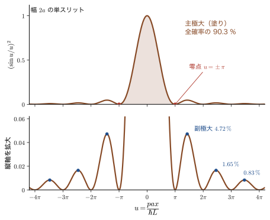
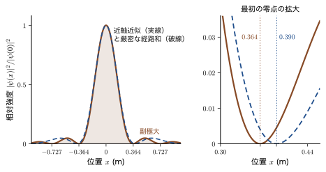
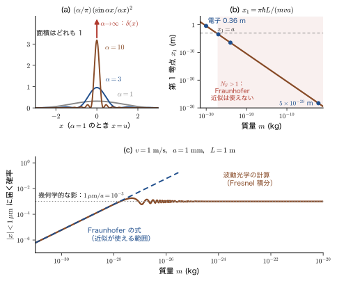
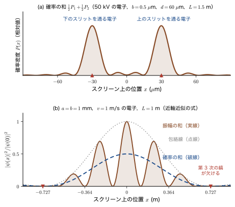
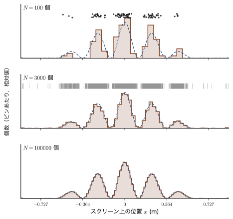
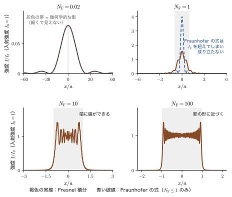

第7章スリットを通る電子 — 波動性と確率
幅のせまいスリット（細長い隙間）に電子の流れを通し，その向こうに置いたスクリーンで電子の届く位置を調べる．電子が小さな粒なら，スリットの幅と同じ細い帯の中にだけ届きそうである．ところが実際には，スリットを狭くするほど電子は大きく広がって届き，しかもその広がり方には，電子がたくさん届く場所とまったく届かない場所が交互に現れる縞模様がある．水面の波や光が狭い隙間を通り抜けるときの回折とそっくりの現象で，電子が波としての性質をもつことのもっとも直接的な証拠である（前章の de Broglie の仮説）．そして，電子は 1 個ずつ点として検出されるのに，たくさん集めると縞になる．この不思議を数式で調べるのが，この章の目的である．
この章では，運動量 $p$ の電子を幅 $2a$ のスリットに当てたとき，スクリーン上の電子の分布が $\bigl(\sin u/u\bigr)^2$（$u\propto x$）という形になることを，一行も飛ばさずに導く．手順は，(1) スリットのすべての点から出る波を足し合わせる（Huygens の原理），(2) 経路の長さを近似して積分できる形にする，(3) 積分して確率密度 $\abs{\psi}^2$ をつくる，の 3 つである．近似が多いので，それぞれの近似がどんな条件で正しいかを，波長・スリットの幅・スクリーンまでの距離から決まる無次元の数（Fresnel 数）を使って，具体的な数値で確かめる．次に，同じ実験を質量の異なる粒子で行ったらどうなるかを考え，重い粒子ほど回折の広がりが小さくなり，日常の物体では直進（幾何学的な影）になる理由を，$\delta$ 関数の言葉で理解する．最後に二重スリットを扱い，「確率を足す」場合と「確率振幅を足す」場合で結果がまったく違うことと，その違いが「どちらのスリットを通ったかが原理的に分かるか」で決まることを見る．
古典物理（AD 03「大学基礎物理学」）で学んだ光の回折・干渉と，計算はほとんど同じである．違いは，波の強さが「1 個の電子がそこに届く確率」の意味をもつことにある．電子 1 個の到達点は予言できず，多数集めた分布だけが $\abs{\psi}^2$ に従う．これが次章で公理として述べる Born（ボルン）の確率解釈である．
- スリット上の各点から出る波の足し合わせ $\psi(x)=A_0\displaystyle\int e^{ipr/\hbar}\dd y$ から，単スリットの確率密度 $\abs{\psi}^2\propto(\sin u/u)^2$，$u=pax/(\hbar L)$ までを，経路長の展開・位相の見積もり・積分を含めて導けること
- 近似の条件（近軸近似と Fraunhofer 近似）を Fresnel 数 $N_{\mathrm F}=a^2/(\lambda L)$ で判定し，主極大の幅・副極大・規格化（$1/\pi$ と $\alpha/\pi$ の違い）を数値で説明できること
- 質量を変えたときの回折の広がりを計算し，$\delta$ 関数への収束と，重い粒が幾何学的な影をつくることの意味を正しく述べられること．息の広がりが回折ではないことを説明できること
- 二重スリットの確率振幅を導き，「縞 × 包絡線」に分解して縞間隔 $\lambda L/d$・欠ける次数を求められること．確率の和と確率振幅の和の違いを説明できること
- 電子を 1 個ずつ飛ばす実験，which-way 検出による縞の消失，コヒーレンスの意味を，確率振幅を使って説明できること
もとにしたノート：望月泰英『物理学ノート 量子力学1』 pp. 9–12（p. 12 は白紙）と，同じ内容の別稿の手書きページ．
7.1 実験の設定 — 幅 2a のスリットに電子線を当てる
7.1.1 問題
実験の配置を図7.1 に示す．左の電子銃から，そろった運動量 $p$ の電子の流れ（電子線）が右へ向かって飛び出し，縦に立てた壁に開けた細長いスリットに垂直に当たる．スリットの向こう側，距離 $L$ のところにスクリーン（検出面．平面 A と呼ぶ）があり，電子が届いた位置を記録する．
問題：単スリットの後ろの確率分布
幅 $2a$ の単スリットに運動量 $p$ の電子線を垂直に当てる．スリットから距離 $L$ にある平面 A 上（$x$ 軸上）に電子が届く確率の分布（確率密度）を求めよ．
注意：$y$ はスリット面の座標，$x$ はスクリーン面の座標
電子は水平に進み，スリット面の上下方向の座標を $y$，スクリーン面の上下方向の座標を $x$ と書く．「$x$ 方向に進む」のではないことに注意してほしい．同じ向きの座標に別々の文字をあてたのは，「スリットのどの点から出たか（$y$）」と「スクリーンのどこに届いたか（$x$）」を区別するためである．スクリーン上の位置 $x$ とスリット上の位置 $y$ の差 $x-y$ が，経路の長さを決める．
2 つの面の間にはたらく力はないので，電子は自由粒子として運動量 $p$ を保ったまま進む．電子は 1 個ずつ飛んでくるとし，同じ実験を何度も繰り返して，届いた位置の分布を調べる．知りたいのは，位置 $x$ の近くに電子が届く確率 $P(x)\dd x$ を与える確率密度 $P(x)$ である．
7.1.2 モデルの断り
実際のスリットには厚みも有限の長さもあり，電子は相対論的な速さで飛ぶこともある．最初から全部を取り入れると計算が見えなくなるので，次の単純化をおく．
- 2 次元の問題として扱う．スリットは，紙面に垂直な方向に無限に長い帯とみなす．すると，粒子の運動は紙面内（進行方向と $y$ 方向）だけを考えればよい．
- 波は 1 成分のスカラー波とみなす．電子のスピン（第IV部）の向きは，結果に影響しないとして無視する．
- 入射する電子線は，運動量 $p$ の平面波とする．垂直に入射するので，波の位相はスリットのすべての点で同じである．
- 波の振幅の減衰と傾きの因子は落とす．スリットの 1 点から広がる波（2 次元では円柱波．1 点から平面内に円形に広がる波で，振幅は距離 $r$ の平方根 $\sqrt r$ に反比例して小さくなる）の振幅は距離とともに小さくなり，斜めに出る波は弱くなる．しかし $x\ll L$ の範囲では経路の長さがほとんど変わらないので，位相だけを考える（$x/L\sim0.4$ に達する思考実験の数値については，7.3.2 節と 7.6.4 節で近似の限界を確かめる）．
- 電子の速さは光速に比べて遅いとして，$p=mv$ とする（数十 kV の電子の $p$ と $\lambda$ は，第6章 6.3 の相対論的な式で置き換える）．
- スクリーンはスリットから十分遠く，$a\ll L$ かつ $\abs{x}\ll L$ とする．この条件は 7.2 節で具体的に確かめる．
7.1.3 スリットのすべての点から出る波を足し合わせる
第6章で見たように，運動量 $p$ の電子には波長 $\lambda=h/p$ の波が伴い，その波は $e^{ikx}$ のような位相をもつ平面波で表される．ここで波数 $k$ と運動量 $p$ の関係を，もう一度確かめておこう．
数学の道具：$k=p/\hbar$
de Broglie の関係 $p=h/\lambda$ を，$\hbar=h/2\pi$ と波数 $k=2\pi/\lambda$ を使って書き直すと， $$ p=\frac{h}{\lambda}=\frac{h}{2\pi}\cdot\frac{2\pi}{\lambda}=\hbar\,k\qquad\text{より}\qquad k=\frac{p}{\hbar} $$ となる．したがって，位置 $x$ に依存する平面波の位相因子は $$ e^{ikx}=e^{i\frac{\hbar k x}{\hbar}}=e^{i\frac{p}{\hbar}x} $$ とも書ける（2 番目の等号は分母分子に $\hbar$ をかけただけ）．波の位相は $p/\hbar$ に距離をかけたもので与えられる．以後，$k=p/\hbar$ を使って，位相を $kr=pr/\hbar$ と書く．なお，$p$ の単位は $\mathrm{kg\,m/s}$，$\hbar$ の単位は $\mathrm{J\,s}=\mathrm{kg\,m^2/s}$ だから，$p/\hbar$ の単位は $\mathrm{m^{-1}}$ で，$r$ をかけて無次元の位相になる．
次に，スリットを通過した電子の波がスクリーンのどこにどれだけ届くかを考える．ここで使うのは，光の回折を説明した Huygens の原理（AD 03 第11章 11.8）と同じ考え方である．スリットを通り抜ける波面の各点は，それ自身が新しい波源となって波を出し，スクリーン上の波は，スリットのすべての点から出た波の重なりである，とする．
電子の波を表す量は確率振幅（あるいは波動関数，wave function）で，一般に複素数の値をとる．位置 $y$ の点でスリットを通った電子がスクリーン上の位置 $x$ にたどり着く確率振幅は，位相 $e^{ikr}$ に比例する．ここで $r$ は，その点からスクリーン上の点までの経路の長さである（図7.1）．したがって，スリット全体を通った電子が位置 $x$ にたどり着く確率振幅は，これをスリットの全体にわたって足し合わせた
\begin{equation} \psi(x)=A_0\int_{-a}^{a}e^{i\frac{p\,r}{\hbar}}\,\dd y \label{eq:7-psi-int} \end{equation}である．$A_0$ は $x$ によらない定数で，入射する電子線の強さで決まる（確率振幅の位相の全体にかかる定数因子も含む）．積分の中の $e^{ipr/\hbar}$ は $r$ を通じて $x$ と $y$ の両方に依存する．式 \eqref{eq:7-psi-int} が，この章の出発点になる式である．確率密度 $\abs{\psi(x)}^2$ は，$\psi$ の複素共役 $\psi^*$ を使って $\abs{\psi}^2=\psi^*\psi$ と書ける．
イメージ：経路をたどる位相を，矢印の回転として足し合わせる
式 \eqref{eq:7-psi-int} の $e^{ipr/\hbar}$ は，大きさ 1 で，向きが角度 $kr=pr/\hbar$ だけ回った複素平面上の矢印（位相子）と見なせる．スリットの各点から届く矢印は，経路の長さ $r$ が少しずつ違うので，少しずつ違う向きをしている．これらをすべて，つなげて足し合わせた矢印が $\psi(x)$ である．$x$ が違えば経路の長さの違い方が変わり，矢印の向きのそろい方が変わるので，長い矢印ができる場所（電子が届きやすい場所）と，矢印が打ち消し合ってしまう場所（届かない場所）ができる．これが縞の起源である（図7.9 で詳しく見る）．
この「可能な経路すべてに位相 $e^{iS/\hbar}$ をつけて足し合わせる」という考え方は，Feynman（ファインマン）の経路積分とよばれる量子力学の定式化の出発点でもある．エネルギーが一定の自由粒子では，経路に沿った作用（短縮作用 $\int p\,\dd s$）が運動量 $p$ と経路の長さ $r$ の積 $pr$ になる（時間を含む作用 $\int L\,\dd t$ とは別の量である）．本章では，スリットを通る直線経路だけを考え，スリットの位置 $y$ が異なる経路を足す（経路積分の本格的な扱いは，本書の範囲を超える）．
なぜ時間の因子は書かないのか
定常的な電子線の波動関数は，時間を含めて $\Psi(x,t)=\psi(x)\,e^{-iEt/\hbar}$ の形になる（第III部）．時間の位相因子 $e^{-iEt/\hbar}$ は，スリットのすべての点の波に共通なので，足し合わせたあとで全体にかかるだけであり，確率密度 $\abs{\Psi}^2=\abs{\psi}^2$ には現れない．そこで式 \eqref{eq:7-psi-int} では空間部分だけを書いた．
例題7.1 波数と位相
(1) 速さ $v=1.0\ \mathrm{m/s}$ の電子の，de Broglie 波長 $\lambda$ と波数 $k=p/\hbar$ を求めよ．(2) エネルギー $100\ \mathrm{eV}$ の電子の波数を求めよ．(3) (1) の電子で，経路の長さが $0.10\ \mathrm{mm}$ だけ違う 2 つの波の位相差 $k\,\Delta r$ を求めよ．(4) $k=p/\hbar$ と $p=h/\lambda$ が同じ内容であることを，(1) の数値で確かめよ．
解答 (1) $p=m_{\mathrm e}v=9.109\times10^{-31}\ \mathrm{kg}\times1.0\ \mathrm{m/s}=9.109\times10^{-31}\ \mathrm{kg\,m/s}$ である．波長は $$ \lambda=\frac{h}{p}=\frac{6.626\times10^{-34}\ \mathrm{J\,s}}{9.109\times10^{-31}\ \mathrm{kg\,m/s}}=7.27\times10^{-4}\ \mathrm{m}=0.727\ \mathrm{mm} $$ である．波数は $k=2\pi/\lambda=2\pi/(7.27\times10^{-4}\ \mathrm{m})=8.64\times10^{3}\ \mathrm{m^{-1}}$ である．これを $\hbar$ で計算すると，$k=p/\hbar=9.109\times10^{-31}/(1.0546\times10^{-34})=8.64\times10^{3}\ \mathrm{m^{-1}}$ で一致する（(4) の確認）．波長が $0.7\ \mathrm{mm}$ とは，肉眼で見える大きさである．速さ $1\ \mathrm{m/s}$ の電子は，波としては非常にゆっくりで長い波なのである．
(2) $100\ \mathrm{eV}=1.602\times10^{-17}\ \mathrm{J}$ の電子の運動量は $p=\sqrt{2m_{\mathrm e}E}=\sqrt{2\times9.109\times10^{-31}\times1.602\times10^{-17}}=5.40\times10^{-24}\ \mathrm{kg\,m/s}$．よって $k=p/\hbar=5.40\times10^{-24}/(1.0546\times10^{-34})=5.12\times10^{10}\ \mathrm{m^{-1}}$（波長 $\lambda=2\pi/k=0.1226\ \mathrm{nm}$）である．
(3) $k\,\Delta r=8.64\times10^{3}\ \mathrm{m^{-1}}\times1.0\times10^{-4}\ \mathrm{m}=0.864\ \mathrm{rad}$（約 $50^\circ$）である．経路差が波長 $0.727\ \mathrm{mm}$ の $0.10/0.727=0.137$ 倍だから，位相差は $2\pi\times0.137=0.864\ \mathrm{rad}$ と一致する．
7.2 単スリットの確率分布を導く
式 \eqref{eq:7-psi-int} を実際に計算しよう．積分の中に経路の長さ $r=\sqrt{L^2+(x-y)^2}$ があり，このままでは積分できない．そこで，$r$ を $y$ の 1 次式（と 2 次式）に近似する．近似は 2 回使う．どちらも「小さいものを落とす」だけだが，何が小さいのか，何と比べて小さいのかを，数値で確認しながら進める．
7.2.1 経路の長さ $r$ を展開する
図7.1 の直角三角形（底辺 $L$，高さ $x-y$）から，三平方の定理により $r=\sqrt{L^2+(x-y)^2}$ である．$L$ をくくり出すと，
\begin{equation} r=\sqrt{L^2+(x-y)^2}=L\sqrt{1+\left(\frac{x-y}{L}\right)^2}\;\approx\;L\left\{1+\frac12\left(\frac{x-y}{L}\right)^2\right\} \label{eq:7-r-approx} \end{equation}となる．最後の近似では，次の二項近似を使った．
数学の道具：二項近似 $(1+\varepsilon)^s\approx1+s\varepsilon$
$\abs{\varepsilon}\ll1$ のとき，任意の実数 $s$ に対して $$ (1+\varepsilon)^s\approx1+s\,\varepsilon $$ が成り立つ．$f(\varepsilon)=(1+\varepsilon)^s$ を $\varepsilon=0$ のまわりでマクローリン展開すると，$f(0)=1$，$f'(0)=s$ なので，$f(\varepsilon)=1+s\varepsilon+\dfrac{s(s-1)}{2}\varepsilon^2+\cdots$ となり，2 次以上の項を落としたものである（AD 02 第4章 4.2）．この近似は，$(1+b)^a\approx1+ab$（$\abs{b}\ll1$）と書かれることも多いが，本書では文字がスリットの半幅 $a$ や開口幅 $b$ と紛れないように $s$，$\varepsilon$ を使った．式 \eqref{eq:7-r-approx} では $s=\tfrac12$，$\varepsilon=\bigl((x-y)/L\bigr)^2$ である．落とした最初の項は $\dfrac{s(s-1)}{2}\varepsilon^2=-\dfrac{\varepsilon^2}{8}$ で，$r$ にすると $-\dfrac{(x-y)^4}{8L^3}$ になる．この項のうち，積分変数 $y$ に依存する部分（$(x-y)^4$ を展開したときの $4x^3y$ の項，およそ $\dfrac{x^3y}{2L^3}$ の大きさ）の位相 $\dfrac{p}{\hbar}\dfrac{x^3y}{2L^3}$ が 1 rad に比べて小さい範囲を近軸近似（paraxial approximation）の適用範囲という（$y$ によらない部分は，積分の外に出る共通の位相因子になり，確率密度に効かない）．たとえば $x/L=0.36$，$k=8.64\times10^{3}\ \mathrm{m^{-1}}$，$\abs{y}\le1\ \mathrm{mm}$ の電子（7.3 節）では，$y$ によらない部分の位相は約 $19\ \mathrm{rad}$ と大きいが，$y$ に依存する部分は約 $0.2\ \mathrm{rad}$ である（7.6.4 節）．
式 \eqref{eq:7-r-approx} の右辺の $(x-y)^2$ を展開すると，
\begin{equation} r\approx L+\frac{(x-y)^2}{2L}=L+\frac{x^2}{2L}-\frac{xy}{L}+\frac{y^2}{2L} \label{eq:7-r-expand} \end{equation}を得る．（$(x-y)^2=x^2-2xy+y^2$ を $2L$ で割った．）右辺の 4 つの項は，$L$ が $x$，$y$ によらない基準の長さ，$x^2/2L$ が $y$ によらない項，$-xy/L$ が $x$ と $y$ の積の項，$y^2/2L$ が $y$ だけの項である．
7.2.2 位相の指数を整理する
式 \eqref{eq:7-r-expand} に $p/\hbar$ をかけて位相をつくる．
\begin{equation} \frac{p\,r}{\hbar}=\frac{p}{\hbar}\left(L+\frac{x^2}{2L}\right)-\frac{p\,x}{\hbar L}\,y+\frac{p}{\hbar}\frac{y^2}{2L} \label{eq:7-phase} \end{equation}第 1 項は $y$ を含まないので，積分の外に出せる．第 2 項は，$-\dfrac{px}{\hbar L}\,y=-q\,y$ とおく $q\equiv\dfrac{p\,x}{\hbar L}$（単位は $\mathrm{m^{-1}}$）を使うと簡潔に書ける．第 3 項が $y^2$ の項である．指数の和は積の形に書けるので，式 \eqref{eq:7-psi-int} は
\begin{equation} \psi(x)=A_0\,e^{i\frac{p}{\hbar}\left(L+\frac{x^2}{2L}\right)}\int_{-a}^{a}e^{-i\frac{p\,x}{\hbar L}\,y}\;e^{i\frac{p}{\hbar}\frac{y^2}{2L}}\,\dd y \label{eq:7-psi-3} \end{equation}となる．積分の前にある $e^{i\frac{p}{\hbar}(L+\frac{x^2}{2L})}$ は，スクリーン上の点 $x$ にスリットの中心（$y=0$）から届く波の位相因子で，絶対値が 1 なので，確率密度には効かない．
注意：指数の分母と係数を間違えやすい
式 \eqref{eq:7-psi-3} の位相因子の分母は $x^2/\mathbf{2L}$ であって $x^2/2$ ではなく，交差項の係数は $\dfrac{p\,x}{\hbar L}$ であって $\dfrac{2px}{\hbar L}$ ではない．$(x-y)^2/(2L)$ を展開するときに，分母の $L$ を落としたり，$-2xy$ の 2 を分母の 2 と相殺し忘れたりしやすい．次元の確認が役に立つ．位相の指数に現れる $x^2/(2L)$ も $xy/L$ も長さの次元をもち，これに $p/\hbar$（単位 $\mathrm{m^{-1}}$）をかけて初めて無次元の位相になる．分母の $L$ を落とした $x^2/2$ は $\mathrm{m^2}$ の次元をもつので，$p/\hbar$ をかけても無次元にならず，位相として成り立たない．ただし，$x^2/2$ の誤りは次元の確認で見つかるが，交差項の係数の 2（$2px/\hbar L$ と書いてしまう誤り）は次元では見つからない．こちらは展開そのもので確かめる：$(x-y)^2=x^2-2xy+y^2$ を $2L$ で割ると，$-\dfrac{2xy}{2L}=-\dfrac{xy}{L}$ となって，2 は約分される．
7.2.3 $y^2$ の項を落としてよい条件 — Fresnel 数
式 \eqref{eq:7-psi-3} の積分の中で，最後の因子 $e^{i\frac{p}{\hbar}\frac{y^2}{2L}}$ が 1 に近ければ，これを落として積分が実行できる．1 に近いとは，指数が 0 に近い，つまり位相 $\dfrac{p}{\hbar}\dfrac{y^2}{2L}$ が 1 rad に比べて十分小さいことである．$k=p/\hbar=2\pi/\lambda$ を使うと，積分の範囲 $\abs{y}\le a$ で，
\begin{equation} \frac{p}{\hbar}\frac{y^2}{2L}=\frac{2\pi}{\lambda}\frac{y^2}{2L}=\frac{\pi\,y^2}{\lambda L}\;\le\;\frac{\pi\,a^2}{\lambda L} \label{eq:7-fresnel-phase} \end{equation}である．最右辺に現れる無次元の量が，次の量である．
定義7.1 Fresnel 数
半幅 $a$ のスリット，波長 $\lambda$，スリットからスクリーンまでの距離 $L$ に対して， $$ N_{\mathrm F}\equiv\frac{a^2}{\lambda L} $$ を Fresnel 数（Fresnel number，フレネル数）という．$y^2$ の項を落とせる条件は，$\pi N_{\mathrm F}\ll1$，すなわち $N_{\mathrm F}\ll1$ である．この条件のもとでの回折を Fraunhofer 回折（遠方回折）という．
なぜ「$y/L$ が小さいから $y^2/L$ はさらに小さい」では足りないのか
$y/L\ll1$（正確には $\abs{x-y}/L\ll1$）は，二項近似（式 \eqref{eq:7-r-approx}）を使うための条件（近軸近似）であって，$y^2$ の項を落とすための条件ではない．$y^2/L$ は長さの次元をもつので，それ単独で「0 に近い」かどうかは決められない．波の位相を決めるのは，長さを波長 $\lambda$ と比べたものだからである．式 \eqref{eq:7-fresnel-phase} のとおり，本当に小さくなければならないのは，$y^2/(2L)$ を $\lambda/(2\pi)$ と比べた位相 $\pi y^2/(\lambda L)$ であり，これは $y/L\ll1$ よりも厳しい条件である．たとえば $a=1\ \mathrm{mm}$，$L=1\ \mathrm{m}$ なら，どの波長でも $y/L\le10^{-3}$ と小さい．しかし，波長 $\lambda=1\ \mathrm{\mu m}$ の光では $N_{\mathrm F}=\dfrac{(10^{-3})^2}{10^{-6}\times1}=1$ となって位相が $\pi\ \mathrm{rad}$ に達し，$y^2$ の項は落とせない．一方，速さ $1\ \mathrm{m/s}$ の電子（$\lambda=0.727\ \mathrm{mm}$）なら $N_{\mathrm F}=1.4\times10^{-3}$ で落としてよい．同じ幾何配置でも，波長によって条件が満たされたり破れたりする．
速さ $1.0\ \mathrm{m/s}$ の電子（$\lambda=0.727\ \mathrm{mm}$），スリットの半幅 $a=1.0\ \mathrm{mm}$，$L=1.0\ \mathrm{m}$ の場合，$N_{\mathrm F}=\dfrac{(1.0\times10^{-3})^2}{7.27\times10^{-4}\times1.0}=1.4\times10^{-3}$ であり，位相は最大でも $\pi N_{\mathrm F}=4.3\times10^{-3}\ \mathrm{rad}$ にすぎない．したがって， $$ e^{i\frac{p}{\hbar}\frac{y^2}{2L}}\approx1\qquad(\abs{y}\le a) $$ と置いてよい．誤差の大きさは，$\abs{e^{i\phi}-1}\le\abs{\phi}$ より高々 $4.3\times10^{-3}$ である（$\phi$ は位相）．
7.2.4 積分を実行する
$y^2$ の項を落とすと，式 \eqref{eq:7-psi-3} は
\begin{equation} \psi(x)\approx A_0\,e^{i\frac{p}{\hbar}\left(L+\frac{x^2}{2L}\right)}\int_{-a}^{a}e^{-iq\,y}\,\dd y,\qquad q=\frac{p\,x}{\hbar L} \label{eq:7-psi-4} \end{equation}となる．$x$ を固定すると $q$ は定数で，被積分関数は $e^{-iqy}$ だけである．$\dfrac{\dd}{\dd y}e^{-iqy}=-iq\,e^{-iqy}$ だから，$e^{-iqy}$ の原始関数は $\dfrac{e^{-iqy}}{-iq}$ である．したがって（$q\ne0$ として），
\begin{align} \int_{-a}^{a}e^{-iqy}\dd y &=\left[\frac{e^{-iqy}}{-iq}\right]_{-a}^{a} =\frac{e^{-iqa}-e^{iqa}}{-iq} =\frac{e^{iqa}-e^{-iqa}}{iq} \notag\\ &=\frac{2i\sin(qa)}{iq} =\frac{2\sin(qa)}{q} \label{eq:7-int} \end{align}となる．3 つ目の等号では分母分子に $-1$ をかけ，4 つ目の等号では Euler（オイラー）の公式から出る $e^{i\theta}-e^{-i\theta}=2i\sin\theta$（AD 02 第21章 21.4）を $\theta=qa$ として使った．$q\to0$ の極限では，$\sin(qa)/q\to a$ なので，積分は $2a$ に近づく．これはスリットの幅そのもの（すべての点の波が同位相で足し合わさる）で，確かに $\displaystyle\int_{-a}^{a}1\,\dd y=2a$ と一致する．
$q=px/(\hbar L)$ を代入し，$u\equiv qa=\dfrac{p\,a\,x}{\hbar L}$ という無次元の量を導入すると，
\begin{equation} \int_{-a}^{a}e^{-iqy}\dd y=\frac{2\hbar L}{p}\,\frac{\sin\frac{pa}{\hbar L}x}{x}=2a\,\frac{\sin u}{u},\qquad u=\frac{p\,a\,x}{\hbar L} \label{eq:7-int-u} \end{equation}である（$\dfrac{2\hbar L}{px}=\dfrac{2a}{u}$ を使った）．係数 $2$ は落としやすいので注意する（定数は $A_0$ に吸収できるので，確率密度の形には影響しない）．こうして，
\begin{equation} \psi(x)=2a\,A_0\,e^{i\frac{p}{\hbar}\left(L+\frac{x^2}{2L}\right)}\,\frac{\sin u}{u} \label{eq:7-psi-single} \end{equation}を得る．
7.2.5 確率密度 $\abs{\psi(x)}^2$
電子が位置 $x$ の近くに届く確率密度は，確率振幅の絶対値の 2 乗 $\abs{\psi(x)}^2$ である．式 \eqref{eq:7-psi-single} で，位相因子の絶対値は $\bigl|e^{i\frac{p}{\hbar}(L+x^2/2L)}\bigr|=1$ だから，$A_0$ を実数にとると，まず
\begin{equation} \abs{\psi(x)}^2=A_0^{\,2}\,\Bigl|e^{i\frac{p}{\hbar}\left(L+\frac{x^2}{2L}\right)}\Bigr|^2\frac{4\hbar^2L^2}{p^2}\,\frac{\sin^2\frac{pa}{\hbar L}x}{x^2}\label{eq:7-I-single0} \end{equation}である（式 \eqref{eq:7-int-u} の $2\hbar L\sin(\cdot)/(px)$ を 2 乗した）．位相因子の絶対値は 1 で，$\dfrac{4\hbar^2L^2}{p^2x^2}=\dfrac{4a^2}{\left(\frac{pa}{\hbar L}x\right)^2}$ と書き直せるから，
\begin{equation} \abs{\psi(x)}^2=4a^2A_0^{\,2}\left(\frac{\sin u}{u}\right)^2=4a^2A_0^{\,2}\left(\frac{\sin\frac{pa}{\hbar L}x}{\frac{pa}{\hbar L}x}\right)^2 \label{eq:7-I-single} \end{equation}となる．
定理7.1 単スリットの Fraunhofer 回折
幅 $2a$ の単スリットに運動量 $p$ の電子線を垂直に当てるとき，近軸近似と Fraunhofer 近似（$N_{\mathrm F}=a^2/(\lambda L)\ll1$）が成り立つ範囲で，スクリーン上の確率密度は $$ \abs{\psi(x)}^2\propto\left(\frac{\sin u}{u}\right)^2,\qquad u=\frac{p\,a\,x}{\hbar L}=\frac{2\pi a}{\lambda L}\,x $$ に比例する．$u=\pm n\pi$（$n=1,2,\dots$）のときに $\abs{\psi}^2=0$ になり，$u=0$ に主極大がある．零点の位置は $x_n=\dfrac{n\pi\hbar L}{pa}=n\,\dfrac{\lambda L}{2a}$ である．
ここで，$u$ の 2 通りの書き方は，$p=h/\lambda=2\pi\hbar/\lambda$ を使って $\dfrac{pa}{\hbar L}=\dfrac{2\pi a}{\lambda L}$ と書き換えただけである．零点の条件 $u=n\pi$ は $\dfrac{2\pi a x}{\lambda L}=n\pi$ となり，$x_n=n\,\dfrac{\lambda L}{2a}$ を得る．
数学の道具：$\sin u/u$ の積分
このあと使う 2 つの積分を，先に述べておく（導出は例題7.2）． $$ \int_{-\infty}^{\infty}\frac{\sin u}{u}\dd u=\pi,\qquad\int_{-\infty}^{\infty}\frac{\sin^2u}{u^2}\dd u=\pi $$ 1 つ目は矩形パルスの Fourier 変換から出る（AD 02 第30章 30.2）．矩形波を三角関数の和で組み立てる様子はFourier 級数のシミュレーターで見られる．$\sin u/u$ を $\operatorname{sinc}u$ と書くことがある．
7.2.6 規格化 — 「規格化すれば $1/\pi$」の意味
電子は必ずスクリーンのどこかに届くので，確率密度は全体で積分すると 1 になる（規格化）．式 \eqref{eq:7-I-single} の定数 $4a^2A_0^{\,2}$ をこの条件で決めよう．$\alpha\equiv\dfrac{pa}{\hbar L}$（単位は $\mathrm{m^{-1}}$．この $\alpha$ と，7.4 節の $\beta\equiv\dfrac{pb}{2\hbar L}$ は，どちらも波数と同じ次元をもつ本章だけの記号で，スピン関数（第IV部）・微細構造定数・共鳴積分などの記号とは無関係である）とおくと $u=\alpha x$ で，$\dd x=\dd u/\alpha$ だから，
\begin{equation} \int_{-\infty}^{\infty}\abs{\psi}^2\dd x=4a^2A_0^{\,2}\int_{-\infty}^{\infty}\frac{\sin^2(\alpha x)}{(\alpha x)^2}\dd x=\frac{4a^2A_0^{\,2}}{\alpha}\int_{-\infty}^{\infty}\frac{\sin^2u}{u^2}\dd u=\frac{4a^2A_0^{\,2}}{\alpha}\,\pi=1 \label{eq:7-norm} \end{equation}である．ゆえに $4a^2A_0^{\,2}=\alpha/\pi$ となり，規格化された確率密度は
\begin{equation} P(x)=\frac{\alpha}{\pi}\left(\frac{\sin\alpha x}{\alpha x}\right)^2=\frac{pa}{\pi\hbar L}\left(\frac{\sin\frac{pa}{\hbar L}x}{\frac{pa}{\hbar L}x}\right)^2 \label{eq:7-P-x} \end{equation}である．
注意：$1/\pi$ は変数 $u$ で規格化したときの係数
「規格化すれば $1/\pi$」というのは，$u=\dfrac{pax}{\hbar L}$ を変数にとった確率密度 $P_u(u)=\dfrac{1}{\pi}\left(\dfrac{\sin u}{u}\right)^2$（$\int P_u\dd u=1$）の係数である．位置 $x$ を変数にとった確率密度は，式 \eqref{eq:7-P-x} のように係数が $\dfrac{\alpha}{\pi}$ になる．確率密度は，変数を変えると，$P_u\dd u=P\dd x$ にしたがって $P=P_u\,\dd u/\dd x=\alpha P_u$ と値が変わる（単位も違う：$P_u$ は無次元，$P$ は $\mathrm{m^{-1}}$）．どちらの変数で規格化したかを，はっきり区別すること．形（$x$ 依存性）は同じなので，グラフの形を議論するときは係数を気にしなくてよい．
なお，近軸近似は $\abs{x}\ll L$ の範囲の近似なのに，規格化の積分を $\pm\infty$ まで行った．これは，分布の裾（$1/x^2$ で小さくなる）に含まれる確率が小さいとき，すなわち主極大がスクリーンの範囲 $L$ に十分収まる（$\alpha L\gg1$）ときに良い近似である．本章の思考実験の電子（$v=1\ \mathrm{m/s}$）では $\alpha L=8.6$ で，$\abs{x}\gt L$ の裾に約 $3.5\ \%$（大まかには $1/(\pi\alpha L)=3.7\ \%$）が残るので，$\alpha/\pi$ は近似値である．$\alpha L\gg1$ が成り立つ重い粒や数十 kV の電子では，よく成り立つ．
7.2.7 グラフの読み方

図7.2 が，単スリット回折の確率密度の形である．読み取れることを整理しよう．
- 主極大：$u=0$（スクリーンの中央）で最大値をとり，$u=\pm\pi$ で最初に 0 になる．主極大の幅（全幅）は $2x_1=\lambda L/a$ で，スリットが狭い（$a$ が小さい）ほど広がる．
- 零点：$u=\pm\pi,\pm2\pi,\dots$，すなわち $x=\pm n\lambda L/(2a)$ で電子はまったく届かない．同じ間隔で並ぶ．
- 副極大：零点と零点の間に山があり，第 1 副極大の高さは主極大の $4.72\ \%$，第 2 は $1.65\ \%$ と急速に小さくなる（例題7.4）．全体の $90.3\ \%$ は主極大の内側に入る．
- 広がり方の傾向：スリットを狭くすると，電子が届く範囲はスリットを通っただけの狭い範囲ではなく，逆に広がる．$x_1=\lambda L/(2a)\propto1/a$ である．波長が長い（運動量が小さい）ほど広がる．
イメージ：スクリーン上の位置は，スリットを通った直後の運動量の横成分を表している
スクリーン上の点 $x$ に届く波は，スリットの軸に対して角度 $\theta\approx x/L$ の向きに進んできた波である．この向きに進む電子の運動量の $y$ 成分は $p_y=p\sin\theta\approx px/L$ だから，式 \eqref{eq:7-psi-4} の $q=\dfrac{px}{\hbar L}$ は $q=p_y/\hbar$ にあたる．すると式 \eqref{eq:7-psi-4} の積分は $$ \int_{-a}^{a}e^{-ip_yy/\hbar}\dd y $$ という，スリットの形（$\abs{y}\le a$ で 1，それ以外で 0 の矩形関数）の Fourier 変換になっている（運動量表示への Fourier 変換は第2章 2.3 で述べた．AD 02 第30章の Fourier 変換とは，$k=p_y/\hbar$ の対応で結ばれる．波束の幅と Fourier 変換の関係は AD 03 第17章 17.6 でも扱った）．つまり，スクリーン上の分布は「スリットを通過した直後の電子の $y$ 方向の運動量の分布」を映しているのである．スリットで電子の位置を幅 $2a$ に制限すると，運動量の広がり $\Delta p_y$ が生じる．第 1 零点の位置 $u=\pi$ は $p_y=\pm\pi\hbar/a=\pm h/(2a)$ に当たるので， $$ (\text{位置の幅 }2a)\times(\text{運動量の広がり }p_{y,1}=h/2a)\;\sim\;h $$ となり，位置と運動量の不確定性を結ぶ関係（次章の不確定性原理）の実例になっている．スリットが狭いほど，位置の不確定さが小さくなる代わりに，運動量が大きく広がる．
例題7.2 $\sin u/u$ の積分と規格化定数
(1) $\displaystyle\int_{-\infty}^{\infty}\frac{\sin u}{u}\dd u=\pi$ を，矩形パルスの Fourier 変換から示せ．(2) 部分積分で，$\displaystyle\int_{-\infty}^{\infty}\frac{\sin^2u}{u^2}\dd u=\int_{-\infty}^{\infty}\frac{\sin2u}{u}\dd u$ を導き，値が $\pi$ であることを示せ．(3) 規格化した確率密度は，$u$ で規格化すると $\dfrac{1}{\pi}\left(\dfrac{\sin u}{u}\right)^2$，$x$ で規格化すると $\dfrac{\alpha}{\pi}\left(\dfrac{\sin\alpha x}{\alpha x}\right)^2$ になることを確かめ，両者の関係を説明せよ．
解答 (1) 矩形パルス $f(t)=1$（$\abs{t}\lt1$），$f(t)=0$（$\abs{t}\gt1$）の Fourier 変換は $$ F(\omega)=\int_{-1}^{1}e^{-i\omega t}\dd t=\left[\frac{e^{-i\omega t}}{-i\omega}\right]_{-1}^{1}=\frac{e^{i\omega}-e^{-i\omega}}{i\omega}=\frac{2\sin\omega}{\omega} $$ である（式 \eqref{eq:7-int} と同じ計算）．逆変換 $f(t)=\dfrac{1}{2\pi}\displaystyle\int_{-\infty}^{\infty}F(\omega)\,e^{i\omega t}\dd\omega$ を，$f$ が連続な点 $t=0$（$f(0)=1$）で用いると， $$ 1=\frac{1}{2\pi}\int_{-\infty}^{\infty}\frac{2\sin\omega}{\omega}\dd\omega=\frac{1}{\pi}\int_{-\infty}^{\infty}\frac{\sin\omega}{\omega}\dd\omega $$ となり，$\displaystyle\int_{-\infty}^{\infty}\frac{\sin\omega}{\omega}\dd\omega=\pi$ を得る．
(2) $\dfrac{1}{u^2}$ を微分される側に，$\sin^2u$ を微分する側にして，部分積分する．$\dfrac{\dd}{\dd u}\left(-\dfrac1u\right)=\dfrac{1}{u^2}$ だから， $$ \int_{-\infty}^{\infty}\frac{\sin^2u}{u^2}\dd u=\left[-\frac{\sin^2u}{u}\right]_{-\infty}^{\infty}+\int_{-\infty}^{\infty}\frac{1}{u}\,\bigl(2\sin u\cos u\bigr)\dd u $$ である．境界項は，$\abs{\sin^2u/u}\le1/\abs{u}\to0$（$u\to\pm\infty$）で 0（$u=0$ でも $\sin^2u/u\to0$ で連続）．残りは $2\sin u\cos u=\sin2u$ より $\displaystyle\int_{-\infty}^{\infty}\frac{\sin2u}{u}\dd u$ である．$w=2u$ と変数変換すると $\dfrac{\sin2u}{u}\dd u=\dfrac{\sin w}{w/2}\cdot\dfrac{\dd w}{2}=\dfrac{\sin w}{w}\dd w$ で，積分は (1) の値 $\pi$ に等しい．
(3) $x$ で規格化した密度 $\dfrac{\alpha}{\pi}\left(\dfrac{\sin\alpha x}{\alpha x}\right)^2$ の積分は，$u=\alpha x$ と変数変換して $\displaystyle\int\dfrac{\alpha}{\pi}\dfrac{\sin^2u}{u^2}\dfrac{\dd u}{\alpha}=\dfrac{1}{\pi}\cdot\pi=1$ となり，確かに 1 に規格化されている．一方，$u$ を変数にとった密度 $\dfrac{1}{\pi}\left(\dfrac{\sin u}{u}\right)^2$ の $u$ での積分も 1 である．同じ確率を $P(x)\dd x=P_u(u)\dd u$ と 2 通りに書いたもので，$P(x)=\alpha P_u(u)$ の関係にある．もし $\dfrac{1}{\pi}\left(\dfrac{\sin\alpha x}{\alpha x}\right)^2$ を $x$ で積分すると $1/\alpha$（$\alpha=8.638\ \mathrm{m^{-1}}$ なら $0.116\ \mathrm{m}$）になり 1 にならない．
例題7.3 電子顕微鏡の電子線による単スリットの数値
加速電圧 $50\ \mathrm{kV}$ の電子線（相対論的な波長 $\lambda=5.355\ \mathrm{pm}$）を，幅 $2a=1.0\ \mathrm{\mu m}$ の単スリットに垂直に当て，$L=1.5\ \mathrm{m}$ 先のスクリーンで観測する．(1) 第 1 零点の位置 $x_1$ と主極大の全幅を求めよ．(2) Fresnel 数を求め，Fraunhofer 近似が成り立つか確かめよ．(3) スリットの幾何学的な影の幅と，主極大の全幅を比べよ．
解答 (1) 定理7.1 より $x_1=\dfrac{\lambda L}{2a}=\dfrac{5.355\times10^{-12}\ \mathrm{m}\times1.5\ \mathrm{m}}{1.0\times10^{-6}\ \mathrm{m}}=8.03\times10^{-6}\ \mathrm{m}=8.03\ \mathrm{\mu m}$ である．主極大は $-x_1$ から $x_1$ までだから，全幅は $2x_1=16.1\ \mathrm{\mu m}$ である．（角度で表すと，$\theta_1\approx\lambda/2a=5.4\times10^{-6}\ \mathrm{rad}$．）
(2) 半幅は $a=0.50\ \mathrm{\mu m}$ だから，$N_{\mathrm F}=\dfrac{a^2}{\lambda L}=\dfrac{(0.50\times10^{-6})^2}{5.355\times10^{-12}\times1.5}=\dfrac{2.5\times10^{-13}}{8.03\times10^{-12}}=0.031$ である．$N_{\mathrm F}\ll1$ が成り立ち，位相の最大値は $\pi N_{\mathrm F}=0.098\ \mathrm{rad}$（約 $5.6^\circ$）と小さいので，Fraunhofer 近似は良い．
(3) 幾何学的な影（電子を弾丸として直進させたときの届く範囲）は，スリットと同じ幅 $1.0\ \mathrm{\mu m}$ である．主極大の全幅 $16.1\ \mathrm{\mu m}$ はその約 16 倍で，スリットを狭くした分だけ電子が大きく広がって届くことが，数値からも分かる．なお，この配置の $x_1=8.03\ \mathrm{\mu m}$ は，第2章の例題2.1 の二重スリット（間隔 $d=1\ \mathrm{\mu m}$）の縞の間隔と偶然同じ数値になるが，意味は別である（あちらは干渉縞の間隔 $\lambda L/d$，こちらは回折の主極大の半幅 $\lambda L/2a$）．
例題7.4 $(\sin u/u)^2$ の副極大と主極大の全確率
(1) $\bigl(\sin u/u\bigr)^2$ の極大の位置が $\tan u=u$ を満たすことを示し，最初の副極大の位置と高さを求めよ．(2) 主極大（$\abs{u}\le\pi$）に含まれる確率を求めよ．
解答 (1) $f(u)=\sin^2u/u^2$ の微分は $$ f'(u)=\frac{2\sin u\cos u\cdot u^2-\sin^2u\cdot2u}{u^4}=\frac{2\sin u\,(u\cos u-\sin u)}{u^3} $$ である．$f'=0$ となるのは，$\sin u=0$（零点．$f=0$ の最小）か，$u\cos u=\sin u$，すなわち $\tan u=u$ のときである．$\tan u=u$ の正の解は，$0\lt u\lt\pi/2$ には $u=0$ しかなく，$\pi\lt u\lt3\pi/2$ の区間で $\tan u$ が 0 から $+\infty$ まで動いて直線 $y=u$ と交わるので，最初の解は数値的に $u_1=4.4934=1.430\pi$ である．このとき $\sin u=u\cos u$ だから $\sin^2u=u^2\cos^2u$ で，$f(u_1)=\cos^2u_1=\dfrac{1}{1+\tan^2u_1}=\dfrac{1}{1+u_1^{\,2}}=\dfrac{1}{1+20.19}=0.0472$ である．主極大（高さ 1）の $4.72\ \%$ となる．
(2) 主極大の確率は $\dfrac{1}{\pi}\displaystyle\int_{-\pi}^{\pi}\frac{\sin^2u}{u^2}\dd u=\dfrac{2}{\pi}\int_{0}^{\pi}\frac{\sin^2u}{u^2}\dd u$ である．部分積分（例題7.2 (2) と同じ）で $\displaystyle\int_0^{U}\frac{\sin^2u}{u^2}\dd u=\mathrm{Si}(2U)-\frac{\sin^2U}{U}$（$\mathrm{Si}(z)=\int_0^z\frac{\sin t}{t}\dd t$ は正弦積分）だから，$U=\pi$ で $\sin\pi=0$，値は $\dfrac{2}{\pi}\,\mathrm{Si}(2\pi)=\dfrac{2}{\pi}\times1.4182=0.903$ である．全確率の約 $90.3\ \%$ が主極大に入り，残り $9.7\ \%$ が両側の副極大に分かれる．
関連シミュレーター：単スリット．波長，スリット幅，スクリーンまでの距離を変えて，主極大の幅 $\lambda L/a$ が変わる様子を確かめられる．導出は スリットの干渉パターンの導出 にもまとめてある．
7.3 質量を変えると何が起こるか — 粒子の波動性の考察
前節で得た確率密度 $\abs{\psi}^2=\dfrac{\alpha}{\pi}\left(\dfrac{\sin\alpha x}{\alpha x}\right)^2$，$\alpha=\dfrac{pa}{\hbar L}$ は，運動量 $p=mv$ を通じて粒子の質量 $m$ に依存する．同じ実験を電子で行ったときと，もっと重い粒で行ったときとで，$\abs{\psi}^2$ はどう変わるのだろうか．この考察が，「量子力学の世界では粒子が波として広がるのに，なぜ私たちが日常で見る物体は広がらずに直進するのか」という問いへの，最初の答えになる．
7.3.1 実験条件
次の条件で考える：スリットからスクリーンまでの距離 $L=1.0\ \mathrm{m}$，スリットの半幅 $a=1.0\times10^{-3}\ \mathrm{m}$（幅 $2\ \mathrm{mm}$），粒子の速さ $v=1.0\ \mathrm{m/s}$．運動量は $p=mv$ だから，
\begin{equation} \alpha=\frac{p\,a}{\hbar L}=\frac{m\,v\,a}{\hbar L}=\frac{2\pi\,m\,v\,a}{h\,L} \label{eq:7-alpha-def} \end{equation}である．$\alpha$ は質量 $m$ に比例する（$v$，$a$，$L$ を固定したとき）．$\alpha$ が大きいほど，主極大の幅 $2x_1=2\pi/\alpha$ は狭くなる．表7.1 に，質量を変えたときの数値をまとめる（次節までの例で個別に計算する）．
| 粒子 | 質量 $m$ (kg) | 波長 $\lambda=h/mv$ (m) | $\alpha=pa/\hbar L$ ($\mathrm{m^{-1}}$) | 第 1 零点 $x_1=\pi/\alpha$ (m) | Fresnel 数 $N_{\mathrm F}=a^2/\lambda L$ |
|---|---|---|---|---|---|
| 電子 | $9.109\times10^{-31}$ | $7.27\times10^{-4}$ | $8.64$ | $0.364$ | $1.4\times10^{-3}$ |
| （仮想の粒子） | $1\times10^{-27}$ | $6.63\times10^{-7}$ | $9.48\times10^{3}$ | $3.31\times10^{-4}$ | $1.5$ |
| （仮想の粒子） | $1\times10^{-24}$ | $6.63\times10^{-10}$ | $9.48\times10^{6}$ | $3.31\times10^{-7}$ | $1.5\times10^{3}$ |
| 重い粒 | $6.626\times10^{-3}$ | $1.00\times10^{-31}$ | $2\pi\times10^{28}$ | $5.0\times10^{-29}$ | $1.0\times10^{25}$ |
表の最右列の Fresnel 数 $N_{\mathrm F}$ は，質量が大きくなるとどんどん大きくなり，1 を超える．$N_{\mathrm F}\ll1$ という Fraunhofer 近似の条件（定義7.1）が破れるので，この表で $N_{\mathrm F}\gtrsim1$ の行の $x_1$ の値は，7.3.4 節と 7.6 節で述べるように，そのままでは意味をもたない．まず，条件が成り立つ電子の場合から見ていこう．
7.3.2 電子の場合
例7.1 速さ $1.0\ \mathrm{m/s}$ の電子
電子を $v=1.0\ \mathrm{m/s}$ で飛ばすとき，$\dfrac{pa}{\hbar L}$ を式 \eqref{eq:7-alpha-def} の右端の形で計算すると， $$ \alpha=\frac{2\pi\times9.109\times10^{-31}\times1.0\times10^{-3}}{6.626\times10^{-34}\times1.0}\doteqdot8.638\ \mathrm{m^{-1}} $$ （分子は $2\pi\,m_{\mathrm e}\,v\,a\,\mathrm{[kg\cdot m/s\cdot m]}$，分母は $h\,L\,\mathrm{[J\,s\cdot m]}$ で，全体の単位は $\mathrm{m^{-1}}$）である．したがって，$u=\alpha x=8.638\,x$ で規格化した確率密度は $$ \abs{\psi}^2=\frac{1}{\pi}\left(\frac{\sin8.638\,x}{8.638\,x}\right)^2\qquad(x\text{ は m 単位}) $$ と書ける．位置 $x$ で規格化した確率密度は，係数が $\alpha/\pi=8.638/\pi=2.750\ \mathrm{m^{-1}}$ になる（式 \eqref{eq:7-P-x}）．零点は $\alpha x=n\pi$ より $x_n=n\pi/8.638=0.364\,n\ \mathrm{m}$，すなわち $x=\pm0.364,\ \pm0.727,\ \dots\ \mathrm{m}$ である．

図7.3 が示すとおり，この電子は，スリットの幅 $2\ \mathrm{mm}$ に比べて桁違いに大きな範囲に広がる．主極大の半幅が $0.364\ \mathrm{m}$ とは，スリットを出てから 1 m 進む間に，上下に 36 cm も広がることを意味する．スリットの幅の 180 倍で，「とても広がっている」．これが，電子の波長 $0.727\ \mathrm{mm}$ がスリットの幅 $2\ \mathrm{mm}$ と同程度で，回折が強く現れるためである（回折が顕著になるのは，波長がスリット幅と同程度かそれ以上のとき）．
注意：速さ $1\ \mathrm{m/s}$ の電子は「思考実験」の値である
実際の電子線の実験は，数十 kV の電圧で加速した電子（$\lambda$ が pm 程度）で行う．$1\ \mathrm{m/s}$ の電子は，1 秒間に重力だけで $\dfrac12gt^2=4.9\ \mathrm{m}$ も落下し，わずかな漂遊電磁場にも曲げられるので，実際には実現できない．ここでは，波長がスリットの大きさと同程度になる状況を極端に単純な数値で見せるための，思考実験である．考察の道筋（$\alpha\propto m$，$N_{\mathrm F}$ の大きさ）は，実際の実験にもそのまま通用する．
例題7.5 近軸近似の零点 $0.364\ \mathrm{m}$ と，厳密な経路和の零点 $0.390\ \mathrm{m}$
$v=1.0\ \mathrm{m/s}$ の電子（$\lambda=0.727\ \mathrm{mm}$，$a=1.0\ \mathrm{mm}$，$L=1.0\ \mathrm{m}$）について，(1) 近軸近似での第 1 零点 $x_1$ と，Fresnel 数を求めよ．(2) $r=\sqrt{L^2+(x-y)^2}$ を近似せずに位相の和 $\int e^{ikr}\dd y$ を計算すると，第 1 の極小は $x=0.390\ \mathrm{m}$ に現れる．この違いを，スクリーン上の位置 $x$ ではなく，回折角 $\theta$ を使って説明せよ．
解答 (1) $\alpha=8.638\ \mathrm{m^{-1}}$ だから $x_1=\pi/\alpha=0.3637\ \mathrm{m}$，Fresnel 数は $N_{\mathrm F}=a^2/(\lambda L)=\dfrac{10^{-6}}{7.27\times10^{-4}}=1.4\times10^{-3}$ で，Fraunhofer 近似の条件は十分に満たされている．
(2) 近軸近似は，$x/L$ が小さいときの近似であった．$x_1/L=0.364$ はもはや小さくない．スリットの中心（$y=0$）からスクリーン上の点までの距離を $R=\sqrt{L^2+x^2}$，スリットの中心からスクリーン上の点へ向かう向きが，スリットの軸（$y=0$ の水平線）となす角を回折角 $\theta$（$\tan\theta=x/L$，$\sin\theta=x/R$）として，スリット上の位置 $y$ を通る経路の長さは $r=\sqrt{R^2-2xy+y^2}\approx R-y\sin\theta$（$y\ll R$ で $y^2$ の項を落とし，二項近似を使った）となる．位相の差は $-ky\sin\theta$ で，積分は式 \eqref{eq:7-int} の $q$ を $k\sin\theta$ に置き換えたものになる．こうして遠方の（Fraunhofer の）回折図形は，$\theta$ を使って $$ \abs{\psi}^2\propto\left(\frac{\sin(ka\sin\theta)}{ka\sin\theta}\right)^2 $$ と書ける．最初の零点は $ka\sin\theta=\pi$，すなわち $\sin\theta_1=\dfrac{\pi}{ka}=\dfrac{\lambda}{2a}=\dfrac{0.727}{2.0}=0.3637$（$\theta_1=21.3^\circ$）である．スクリーン上の位置は $x=L\tan\theta_1=L\,\dfrac{\sin\theta_1}{\sqrt{1-\sin^2\theta_1}}=\dfrac{0.3637}{\sqrt{1-0.1323}}\,\mathrm{m}=0.390\ \mathrm{m}$ になる．近軸近似は $\tan\theta\approx\sin\theta\approx\theta$ と見なして $x_1=L\sin\theta_1=0.364\ \mathrm{m}$ としたものなので，$x_1/L=0.36$ のような大きい角度では，$\tan\theta_1/\sin\theta_1=1/\sqrt{1-\sin^2\theta_1}=1.074$ で，約 $7\ \%$ ずれる（近似式 $1+\tfrac12\sin^2\theta$ は $1.066$．表7.5）．回折角 $\sin\theta=\lambda/(2a)$ で見れば，式は正しい．
7.3.3 $\delta$ 関数 — 極限の言葉を用意する
次に，質量が大きい場合を考える．$\alpha\propto m$ を大きくしていくと，確率密度 \eqref{eq:7-P-x} の主極大は高く細くなる．$m\to\infty$ の極限で，主極大は「$x=0$ にだけある，面積 1 の無限に細く高いスパイク」になる．このような極限を数学的に表すのが，次の Dirac の $\delta$ 関数である．
定義7.2 Dirac の $\delta$ 関数（デルタ関数）
$\delta(x)$ は，次の性質をもつ「関数」（正確には超関数）である．$x\ne0$ で $\delta(x)=0$，$x=0$ で $+\infty$ で，全体の積分が 1， $$ \int_{-\infty}^{\infty}\delta(x)\dd x=1,\qquad\int_{-\infty}^{\infty}f(x)\,\delta(x)\dd x=f(0)\quad(f\text{ は }x=0\text{ で連続}) $$ $\delta$ 関数は，面積が 1 のまま幅だけを 0 に近づけた関数の列の極限として表される．代表的な例は $$ \delta(x)=\lim_{n\to\infty}\frac{\sin nx}{\pi x} $$ である．（AD 02 第30章 30.3 でも扱った．）
右辺の $\dfrac{\sin nx}{\pi x}$ を確かめよう．$u=nx$ と置くと $\dfrac{\dd x}{x}=\dfrac{\dd u}{u}$ だから，任意の $n$ について $$ \int_{-\infty}^{\infty}\frac{\sin nx}{\pi x}\dd x=\frac{1}{\pi}\int_{-\infty}^{\infty}\frac{\sin u}{u}\dd u=\frac{1}{\pi}\cdot\pi=1 $$ であり（例題7.2 (1) の $\pi$ の値を使った．面積はいつも 1），$x=0$ での値は $\lim_{x\to0}\dfrac{\sin nx}{\pi x}=\dfrac{n}{\pi}\to\infty$，主極大の幅は $\sim\pi/n\to0$ である．したがって，$n$ を大きくすると，原点に面積 1 の非常に細く高いスパイクができる．なお，$x\ne0$ でこの関数は 0 に収束するのではなく振動を続ける（振幅が $1/(\pi\abs{x})$）が，滑らかな関数 $f$ をかけて積分すると振動は打ち消し合い，$f(0)$ だけが残る．
スリットの回折パターンに現れるのは，2 乗の形（つねに正で，確率密度にふさわしい）である．
\begin{equation} \delta(x)=\lim_{\alpha\to\infty}\frac{\alpha}{\pi}\left(\frac{\sin\alpha x}{\alpha x}\right)^2 \label{eq:7-dirac-seq} \end{equation}これは，例題7.2 (3) で確かめたとおり，面積が $\alpha$ によらず 1 で，$x=0$ の値が $\alpha/\pi\to\infty$，主極大の幅 $\pi/\alpha\to0$ である．式 \eqref{eq:7-P-x} の単スリットの確率密度そのものである．つまり，回折による広がりは，質量が大きくなる（$\alpha\to\infty$）極限で，$\delta$ 関数になる．$\delta$ 関数のグラフは，原点に立つ上向きの矢印（無限に細く高い 1 本のスパイクで，面積 1）で表す．図7.5 (a) の原点の矢印がそれで，そこに向かう手前の姿が，$\alpha=1,3,10$ の順に，同じ面積 1 のまま高くなり細くなっていく曲線である．
7.3.4 重い粒の場合
例7.2 質量 $6.626\times10^{-3}\ \mathrm{kg}$ の粒
質量 $6.626\times10^{-3}\ \mathrm{kg}$（約 $6.6\ \mathrm{g}$）の粒を $v=1.0\ \mathrm{m/s}$ で飛ばす．同じスリットの条件（$a=1.0\ \mathrm{mm}$，$L=1.0\ \mathrm{m}$）で， $$ \alpha=\frac{2\pi\times6.626\times10^{-3}\times1.0\times10^{-3}}{6.626\times10^{-34}\times1.0}=2\pi\times10^{28}\ \mathrm{m^{-1}} $$ である（$6.626\times10^{-3}\times10^{-3}/6.626\times10^{-34}=10^{28}$ を使った）．$u$ で規格化した確率密度は $$ \abs{\psi}^2=\frac{1}{\pi}\left(\frac{\sin(2\pi\times10^{28}\,x)}{2\pi\times10^{28}\,x}\right)^2 $$ となる．これは $x=0$ でだけ $1/\pi$ の値をとり，$x\ne0$ ではほぼ 0 である．主極大の幅（第 1 零点）は $x_1=\pi/\alpha=5.0\times10^{-29}\ \mathrm{m}$ で，陽子の大きさ $10^{-15}\ \mathrm{m}$ よりも 14 桁も小さい．式 \eqref{eq:7-dirac-seq} の $\delta$ 関数そのものである：$\abs{\psi}^2\to\delta(x)$．回折による広がりは検出できないほど小さく，式は $\delta$ 関数に近づく．ただし，この粒では Fraunhofer 近似の条件が成り立たないので，実際の到達位置は，次の考察のとおり，スリットの影の全体（幅 $2\ \mathrm{mm}$）に広がる（図7.4 (b)）．
考察：$\delta$ 関数の正しい理解 — 「$x=0$ の 1 点」は幾何学的な影である
「重い粒は $x=0$ にしか届かない」という言い方は，正しく読むための注意が必要である．例7.2 の粒について Fresnel 数を計算すると，波長が $\lambda=h/(mv)=1.0\times10^{-31}\ \mathrm{m}$ なので $N_{\mathrm F}=\dfrac{a^2}{\lambda L}=\dfrac{(1.0\times10^{-3})^2}{1.0\times10^{-31}\times1.0}=1.0\times10^{25}\gg1$ である．Fraunhofer 近似の条件 $N_{\mathrm F}\ll1$（定義7.1）は，ここでは成り立たない．したがって，式 \eqref{eq:7-P-x} をこの粒に使った結果 $\delta(x)$ を，そのまま届く位置の分布と読んではいけない．
成り立つのは，次の言い方である．「回折による広がり」（$\alpha\to\infty$ の極限で $\delta$ 関数になる部分）が消えて，スリットの各点から出た波は，まっすぐ前に進む．スリットの位置 $y$ から出て直進する波は，スクリーン上の $x=y$ に届く．すべての $y$（$\abs{y}\le a$）を足し合わせると，スクリーン上の分布は $$ P(x)=\int_{-a}^{a}\frac{1}{2a}\,\delta(x-y)\dd y=\begin{cases}\dfrac{1}{2a}&(\abs{x}\lt a)\\[2mm]0&(\abs{x}\gt a)\end{cases} $$ という，スリットの幾何学的な影（幅 $2a=2\ \mathrm{mm}$ の一様な分布）になる．図7.4 (b) の帯である．式 \eqref{eq:7-dirac-seq} の $\delta$ 関数は「回折の広がりが 0 になった」という数学的な表現であり，粒が 1 点に集まることではない．
これは，波長が 0 に近づく極限で，波動光学が幾何光学（光線）に移り変わることと同じである（$h\to0$ の極限は，古典力学に対応する）．重い粒が古典的に見えるのは，波長が短すぎて，回折の縞が見えないからである．波動光学の計算（Fresnel 積分）では，幅 $2a$ の影の縁に，幅 $\sqrt{\lambda L}=3\times10^{-16}\ \mathrm{m}$ のぼやけが残るだけである（7.6 節）．
7.3.5 質量と回折の広がり

図7.5 (b) は，第 1 零点 $x_1=\dfrac{\pi\hbar L}{mva}$ が質量 $m$ に反比例することを両対数のグラフで示す．質量が 1 桁増えるごとに，広がりは 1 桁狭まる．一方，$N_{\mathrm F}=\dfrac{a^2mv}{hL}$ も質量に比例して増え，$N_{\mathrm F}=1$ になる質量は $m=\dfrac{hL}{va^2}=6.6\times10^{-28}\ \mathrm{kg}$ である．これより重くなると，Fraunhofer 近似そのものが使えなくなり，$x_1$ の式は意味をもたない（赤い領域）．また，同じ $x_1$ が $a$（スリットの半幅）と等しくなる質量は $m=\dfrac{hL}{2va^2}=3.3\times10^{-28}\ \mathrm{kg}$ で，ほぼ同じ質量で $N_{\mathrm F}\sim1$ となる．これは偶然ではなく，回折の広がり $\lambda L/2a$ が影の半幅 $a$ に等しいという条件が，$N_{\mathrm F}=a^2/(\lambda L)=1/2$ と同じものだからである．
例題7.6 質量と回折角
幅 $2a=100\ \mathrm{nm}$ のスリットに，次の粒子を垂直に当てる．第 1 零点の方向 $\theta_1\approx\lambda/(2a)$ を求めよ．(1) 熱中性子（質量 $1.675\times10^{-27}\ \mathrm{kg}$，速さ $2200\ \mathrm{m/s}$）．(2) ヘリウム原子（質量 $4.003\ \mathrm{u}$，$300\ \mathrm{K}$ での二乗平均速さ $\sqrt{3k_{\mathrm B}T/m}$）．(3) $\mathrm{C_{60}}$ 分子（質量 $720\ \mathrm{u}$，速さ $200\ \mathrm{m/s}$）．(4) 野球のボール（質量 $0.145\ \mathrm{kg}$，速さ $40\ \mathrm{m/s}$）が幅 $1\ \mathrm{m}$ の出入口を通るとき．なお $1\ \mathrm{u}=1.6605\times10^{-27}\ \mathrm{kg}$ である．
解答 $\theta_1$ は $\sin\theta_1=\lambda/2a$ で，$\lambda\ll2a$ なら $\theta_1\approx\lambda/2a$（rad）である．(1) $\lambda=\dfrac{h}{mv}=\dfrac{6.626\times10^{-34}}{1.675\times10^{-27}\times2200}=1.80\times10^{-10}\ \mathrm{m}=0.180\ \mathrm{nm}$．$\theta_1=\dfrac{1.80\times10^{-10}}{1.0\times10^{-7}}=1.80\times10^{-3}\ \mathrm{rad}=1.80\ \mathrm{mrad}$．
(2) 質量 $m=4.003\times1.6605\times10^{-27}=6.647\times10^{-27}\ \mathrm{kg}$．$v=\sqrt{\dfrac{3\times1.381\times10^{-23}\times300}{6.647\times10^{-27}}}=1.37\times10^{3}\ \mathrm{m/s}$．$\lambda=\dfrac{6.626\times10^{-34}}{6.647\times10^{-27}\times1367}=7.29\times10^{-11}\ \mathrm{m}=0.0729\ \mathrm{nm}$．$\theta_1=7.29\times10^{-11}/10^{-7}=0.729\ \mathrm{mrad}$．
(3) $m=720\times1.6605\times10^{-27}=1.196\times10^{-24}\ \mathrm{kg}$．$\lambda=\dfrac{6.626\times10^{-34}}{1.196\times10^{-24}\times200}=2.77\times10^{-12}\ \mathrm{m}=2.77\ \mathrm{pm}$．$\theta_1=2.77\times10^{-12}/10^{-7}=2.77\times10^{-5}\ \mathrm{rad}=0.0277\ \mathrm{mrad}$．
(4) $\lambda=\dfrac{6.626\times10^{-34}}{0.145\times40}=1.14\times10^{-34}\ \mathrm{m}$，$2a=1\ \mathrm{m}$ なので $\theta_1=1.1\times10^{-34}\ \mathrm{rad}$．
質量が大きいほど（運動量が大きいほど）波長が短く，回折角が小さくなる．中性子から $\mathrm{C_{60}}$ までで，質量は約 700 倍になり（速さも違う），回折角は約 65 倍小さくなる．それでも $10^{-5}\ \mathrm{rad}$ 程度の角度は，精密な装置なら測定できる．ボールでは $10^{-34}\ \mathrm{rad}$ で，宇宙の大きさ（約 $10^{26}\ \mathrm{m}$）だけ進んでも広がりは $10^{-8}\ \mathrm{m}$ にしかならず，検出は不可能である．
例題7.7 $\delta$ 列への収束と，幾何学的な影
$v=1\ \mathrm{m/s}$，$a=1\ \mathrm{mm}$，$L=1\ \mathrm{m}$ で，質量 $m=10^{-30},\ 10^{-27},\ 10^{-24}\ \mathrm{kg}$ の粒が $\abs{x}\lt1\ \mathrm{\mu m}$ に届く確率を，Fraunhofer の式 \eqref{eq:7-P-x} から求めよ．また Fresnel 数を計算し，この結果が使えるかどうか判断せよ．
解答 $P(\abs{x}\lt x_0)=\displaystyle\int_{-x_0}^{x_0}\dfrac{\alpha}{\pi}\dfrac{\sin^2\alpha x}{(\alpha x)^2}\dd x=\dfrac{1}{\pi}\int_{-\alpha x_0}^{\alpha x_0}\dfrac{\sin^2u}{u^2}\dd u=\dfrac{2}{\pi}\left[\mathrm{Si}(2U)-\dfrac{\sin^2U}{U}\right]$（$U=\alpha x_0$．例題7.4 (2) と同じ式）である．
- $m=10^{-30}\ \mathrm{kg}$：$\alpha=\dfrac{mva}{\hbar L}=\dfrac{10^{-30}\times10^{-3}}{1.0546\times10^{-34}}=9.48\ \mathrm{m^{-1}}$，$U=9.48\times10^{-6}\ll1$．このとき $\dfrac{\sin^2u}{u^2}\approx1$ なので $P\approx\dfrac{2\alpha x_0}{\pi}=\dfrac{2\times9.48\times10^{-6}}{\pi}=6.0\times10^{-6}$．Fresnel 数は $N_{\mathrm F}=\dfrac{a^2mv}{hL}=\dfrac{10^{-6}\times10^{-30}}{6.626\times10^{-34}}=1.5\times10^{-3}\ll1$ で，この結果は有効．
- $m=10^{-27}\ \mathrm{kg}$：$\alpha=9.48\times10^{3}\ \mathrm{m^{-1}}$，$U=9.48\times10^{-3}$．$P\approx\dfrac{2\times9.48\times10^{3}\times10^{-6}}{\pi}=6.0\times10^{-3}$．$N_{\mathrm F}=1.5$ で，ちょうど近似の限界にあたる．
- $m=10^{-24}\ \mathrm{kg}$：$\alpha=9.48\times10^{6}\ \mathrm{m^{-1}}$，$U=9.48$．$P=\dfrac{2}{\pi}\left[\mathrm{Si}(18.96)-\dfrac{\sin^2(9.48)}{9.48}\right]=0.966$．しかし $N_{\mathrm F}=1.5\times10^{3}\gg1$ で，Fraunhofer の式は使えない．
面積が 1 のまま幅が狭くなる $\delta$ 列の性質から，$m$ を増やすと $x=0$ の近傍に確率が集まるが，それは Fraunhofer 近似が成り立つ間だけである．3 番目の質量では式は「96.6 % が $1\ \mathrm{\mu m}$ 以内」といい，一見 $\delta$ 関数に近づいたようだが，実際にはスリットの影の幅は $2\ \mathrm{mm}$ であり，$\abs{x}\lt1\ \mathrm{\mu m}$ に入る確率は幅の比 $1\ \mathrm{\mu m}/1\ \mathrm{mm}=10^{-3}$ 程度である（図7.5 (c)）．質量 $6.626\times10^{-3}\ \mathrm{kg}$ の粒でも $N_{\mathrm F}=1.0\times10^{25}$ で同様に，スクリーン上の分布は幅 $2\ \mathrm{mm}$ の幾何学的な影に一致する．
7.3.6 息の広がりは回折ではない
「小さく口を閉じて息を吹くとき，$\mathrm{O_2}$，$\mathrm{N_2}$ の分子たちは分散する」という日常の経験は，スリットで電子が広がることと同じ現象に思えるかもしれない．しかし，次の理由で，これは回折ではない．
注意：息の広がりは回折ではない
空気の主成分である窒素分子 $\mathrm{N_2}$（質量 $28.0\ \mathrm{u}$）の，$300\ \mathrm{K}$ での熱的 de Broglie 波長（第2章 2.5）は，$\lambda_T=\dfrac{h}{\sqrt{2\pi mk_{\mathrm B}T}}=0.019\ \mathrm{nm}$ である．口の大きさを $1\ \mathrm{cm}$ とすると，波長は口の大きさの $2\times10^{-9}$ 倍にすぎず，回折の広がりの目安 $\theta\approx\lambda/(2a)$ は $10^{-9}\ \mathrm{rad}$ 程度と，まったく見えない．息が扇状に広がるのは，回折ではなく，次の理由による．(1) 常圧の空気では，分子の平均自由行程は約 $0.07\ \mathrm{\mu m}$ と，口の大きさよりずっと短いので，分子は口を出たあとも互いに衝突を繰り返す．波の伝播としてではなく，流体の噴流として運動する．(2) 噴流は，周囲の空気を巻き込み，乱流によって下流に向かって円錐状に広がる．(3) 分子は熱運動（$300\ \mathrm{K}$ で平均約 $480\ \mathrm{m/s}$）で不規則な向きにも飛ぶ．量子力学的な回折が見えるのは，分子どうしが衝突しない高真空の分子線（$\mathrm{C_{60}}$ の実験など，7.5 節）である．
7.4 二重スリット — 確率の和と確率振幅の和
次に，スリットを 2 つにする．第2章 2.1 で見たとおり，電子を 2 つのスリットに通すと，スクリーン上に明暗の縞ができる．この節では，その縞の分布を，前節と同じ方法で導く．同時に，「電子がどちらのスリットを通ったか」が分かる場合には，干渉縞は現れず，単スリットの回折が 2 つ並ぶだけであることも示す．この 2 つの答えの違いが，量子力学の核心である．
7.4.1 二重スリットの配置
図7.6 の配置を式で表す．スリット面（$y$ 軸）に，幅 $b$ の開口が 2 つあり，それぞれ $$ a\le y\le a+b\qquad\text{と}\qquad-a-b\le y\le-a $$ の範囲である．中央の遮蔽板は $-a\le y\le a$（幅 $2a$）である．2 つの開口の中心は $y=\pm(a+b/2)=\pm d/2$ で，$d=2a+b$ を中心間隔という．運動量 $p$ の電子線が $y=0$ に向けて垂直に入射する．
注意：この節の $a$ と $b$ は，単スリットのときとは意味が違う
前節では $a$ をスリットの半幅としたが，この節では $b$ が開口の幅で，$a$ は中央の遮蔽板の半幅である．開口の幅は，単スリットの $2a$ にあたる量が $b$ に置き換わる（単スリットの結果 \eqref{eq:7-P-x} を，この節で使うときは $a\to b/2$ と読み替える）．
問題：幅 $b$ の二重スリットに運動量 $p$ の電子線を垂直に当てたとき，スリットから距離 $L$ の平面 A 上の確率分布を求め，実験の結果と比べよ．
7.4.2 まず確率の和 — どちらのスリットを通ったか分かる場合
最初に，電子がどちらのスリットを通ったかが区別できる場合を考えよう．たとえば，各スリットの近くに電子が通ったことを記録する装置があって，その記録が残るとする．この場合，スクリーンに届く電子は「上のスリットを通ったグループ」と「下のスリットを通ったグループ」の 2 つに分けられる．それぞれのグループは，単スリットだけを開けたときの分布に従う．電子が上のスリットを通る確率と下のスリットを通る確率は，対称だからどちらも $1/2$ である．したがって，スクリーン上の確率分布は，各スリットの分布の確率の和（重み $1/2$ ずつ）になる：
\begin{equation} P(x)=\tfrac12P_1(x)+\tfrac12P_2(x) \label{eq:7-P-sum} \end{equation}$P_1$，$P_2$ は，それぞれのスリットだけを開けたときの確率密度である．
$P_j$ を求めよう．スリット $j$ の中心が $y=y_j$（$y_1=+d/2$，$y_2=-d/2$）で，幅 $b$ のとき，開口内の位置を $y=y_j+s$（$-b/2\le s\le b/2$）と書く．経路の長さの展開 \eqref{eq:7-r-expand} は，原点を $y_j$ に移して $$ r\approx L+\frac{(x-y_j)^2}{2L}-\frac{(x-y_j)\,s}{L}+\frac{s^2}{2L} $$ となる（$x-y=x-y_j-s$ を 2 乗して $2L$ で割った）．$s^2$ の項は，前節と同じく位相 $\pi b^2/(4\lambda L)\ll1$ のとき落とせる．すると 7.2 節とまったく同じ計算が，$x\to x-y_j$，$a\to b/2$ の置き換えで実行できて， $$ \psi_j(x)=A_0\,e^{i\frac{p}{\hbar}\left(L+\frac{(x-y_j)^2}{2L}\right)}\int_{-b/2}^{b/2}e^{-i\frac{p(x-y_j)}{\hbar L}s}\dd s=b\,A_0\,e^{i\frac{p}{\hbar}\left(L+\frac{(x-y_j)^2}{2L}\right)}\,\frac{\sin v_j}{v_j},\qquad v_j=\beta\,(x-y_j) $$ を得る（$\beta\equiv\dfrac{p\,b}{2\hbar L}$ とおいた．$\beta$ は 7.2.6 節の $\alpha$ と同じく本章だけの記号で，$a\to b/2$ の置き換えで $\alpha$ が $\beta$ になる）．したがって $\abs{\psi_j}^2=A_0^{\,2}b^2\left(\dfrac{\sin v_j}{v_j}\right)^2$ で，規格化すると単スリットのときと同じく $P_j(x)=\dfrac{\beta}{\pi}\left(\dfrac{\sin\beta(x-y_j)}{\beta(x-y_j)}\right)^2$ である．式 \eqref{eq:7-P-sum} に入れて，
\begin{equation} P(x)=\frac{\beta}{2\pi}\left\{\left(\frac{\sin\beta\left(x-\frac{d}{2}\right)}{\beta\left(x-\frac{d}{2}\right)}\right)^2+\left(\frac{\sin\beta\left(x+\frac{d}{2}\right)}{\beta\left(x+\frac{d}{2}\right)}\right)^2\right\},\qquad\beta=\frac{p\,b}{2\hbar L},\quad d=2a+b \label{eq:7-P-sum2} \end{equation}を得る．式 \eqref{eq:7-P-sum2} の係数 $\dfrac{\beta}{2\pi}$ は，各項が「$1/\pi$ の（$x$ の変数では $\beta/\pi$ の）確率密度」の半分ずつであることを表す．変数を $v=\beta(x\mp d/2)$ にとると，係数は $\dfrac{1}{2\pi}$ である．
「干渉していない．しかし回折はしている」
式 \eqref{eq:7-P-sum2} は，単スリットの回折パターンが，2 つのスリットの位置 $x=\pm d/2$ に 1 つずつ，重ならずに並んだ形である（図7.7 (a)）．2 つの山のあいだの細かい縞（干渉縞）は現れない．「干渉はしていないが，回折はしている」．それぞれのスリットの回折の広がり（各山の半幅 $\lambda L/b$）は，スリットが狭いほど大きい．2 つの山がはっきり分かれて見えるためには，中心間隔 $d$ がこの広がりより大きい，すなわち $d/2\gtrsim\lambda L/b$ が必要である．たとえば $a=b=1\ \mathrm{mm}$，$v=1\ \mathrm{m/s}$ の電子では $d/2=1.5\ \mathrm{mm}$，$\lambda L/b=0.727\ \mathrm{m}$ で，2 つの山は完全に重なって 1 つの山に見える（図7.7 (b) の破線）．これは，「確率の和」が回折だけを含み，干渉を含まないことの現れである．
7.4.3 確率振幅の和 — どちらを通ったか区別できない場合
次に，どちらのスリットを通ったかの情報がどこにも残らない場合を考える．このとき，電子は「通りうる 2 つの道」の両方の確率振幅を足し合わせる（第2章 2.1.4）．2 つの開口を通る経路の和は，式 \eqref{eq:7-psi-int} と同じ積分を，2 つの範囲について足したものである．
導出：二重スリットの確率振幅 $\psi(x)$
[1] 出発点．2 つの開口 $a\le y\le a+b$ と $-a-b\le y\le-a$ を通る電子が，平面 A 上の点 $x$ に届く確率振幅は， \begin{equation} \psi(x)=A_0\int_{a}^{a+b}e^{i\frac{p}{\hbar}r}\dd y+A_0\int_{-a-b}^{-a}e^{i\frac{p}{\hbar}r}\dd y \label{eq:7-psi-double} \end{equation} である（積分の前の $A_0$ は，両方の積分で同じ定数）．
[2] 経路の長さ．式 \eqref{eq:7-r-expand} より $r\approx L+\dfrac{x^2}{2L}-\dfrac{xy}{L}+\dfrac{y^2}{2L}$ である．最後の $\dfrac{y^2}{2L}$ は「とても小さいので 0 とした」．その位相は最大で $\dfrac{p}{\hbar}\dfrac{(a+b)^2}{2L}=\dfrac{\pi(a+b)^2}{\lambda L}$ である．$a=b=1.0\ \mathrm{mm}$，$L=1.0\ \mathrm{m}$，$\lambda=0.727\ \mathrm{mm}$（$v=1\ \mathrm{m/s}$ の電子）なら $\dfrac{\pi(2\times10^{-3})^2}{7.27\times10^{-4}\times1}=0.017\ \mathrm{rad}$ と小さい．よって $r\approx L+\dfrac{x^2}{2L}-\dfrac{xy}{L}$ と置く．
[3] 積分の形に書く．$y$ によらない位相を積分の外に出し，$q=\dfrac{px}{\hbar L}$ とおくと， $$ \psi(x)\approx A_0\,e^{i\frac{p}{\hbar}\left(L+\frac{x^2}{2L}\right)}\left\{\int_{a}^{a+b}e^{-iqy}\dd y+\int_{-a-b}^{-a}e^{-iqy}\dd y\right\} $$ である．
[4] 原始関数．$e^{-iqy}$ の原始関数は $\dfrac{e^{-iqy}}{-iq}=-\dfrac{1}{iq}e^{-iqy}$ で，$\dfrac{1}{iq}=\dfrac{\hbar L}{ipx}$ だから， \begin{equation} \psi(x)\approx A_0\,e^{i\frac{p}{\hbar}\left(L+\frac{x^2}{2L}\right)}\left\{\left[-\frac{\hbar L}{ipx}\,e^{-i\frac{p}{\hbar}\frac{x}{L}y}\right]_{a}^{a+b}+\left[-\frac{\hbar L}{ipx}\,e^{-i\frac{p}{\hbar}\frac{x}{L}y}\right]_{-a-b}^{-a}\right\} \label{eq:7-psi-d2} \end{equation} となる．
[5] 上端と下端を代入する．第 1 の括弧は $-\dfrac{\hbar L}{ipx}\bigl(e^{-iq(a+b)}-e^{-iqa}\bigr)$，第 2 の括弧は $-\dfrac{\hbar L}{ipx}\bigl(e^{iqa}-e^{iq(a+b)}\bigr)$ である（$y=-a$ での値が $e^{-iq(-a)}=e^{iqa}$，$y=-a-b$ での値が $e^{iq(a+b)}$ になることに注意）．2 つを足すと， $$ -\frac{\hbar L}{ipx}\Bigl\{e^{-iq(a+b)}-e^{-iqa}+e^{iqa}-e^{iq(a+b)}\Bigr\}=\frac{\hbar L}{ipx}\Bigl\{\bigl(e^{iq(a+b)}-e^{-iq(a+b)}\bigr)-\bigl(e^{iqa}-e^{-iqa}\bigr)\Bigr\} $$ である（波括弧の中の符号を全部入れ替えて，前の係数の符号を $-\to+$ に変えた）．$q=\dfrac{px}{\hbar L}$ を戻すと， \begin{equation} \psi(x)=A_0\,e^{i\frac{p}{\hbar}\left(L+\frac{x^2}{2L}\right)}\cdot\frac{\hbar L}{ipx}\left\{\left(e^{i\frac{px}{\hbar L}(a+b)}-e^{-i\frac{px}{\hbar L}(a+b)}\right)-\left(e^{i\frac{px}{\hbar L}a}-e^{-i\frac{px}{\hbar L}a}\right)\right\} \label{eq:7-psi-d3} \end{equation} になる．
[6] Euler の公式．$e^{i\theta}-e^{-i\theta}=2i\sin\theta$ を使うと，各括弧は $2i\sin$ になり，$\dfrac{\hbar L}{ipx}\cdot2i=\dfrac{2\hbar L}{px}$ だから， \begin{equation} \psi(x)=A_0\,e^{i\frac{p}{\hbar}\left(L+\frac{x^2}{2L}\right)}\,\frac{2\hbar L}{px}\left(\sin\frac{p(a+b)}{\hbar L}x-\sin\frac{pa}{\hbar L}x\right) \label{eq:7-psi-d4} \end{equation} を得る．
[7] 確率密度．位相因子の絶対値は 1 である．振幅 $\psi$ に 2 乗はつかないが，$\abs{\psi}^2$ をつくると括弧が 2 乗になり， \begin{equation} \abs{\psi(x)}^2=A_0^{\,2}\,\frac{4\hbar^2L^2}{p^2x^2}\left(\sin\frac{p(a+b)}{\hbar L}x-\sin\frac{pa}{\hbar L}x\right)^2=4a^2A_0^{\,2}\left(\frac{\sin\frac{p(a+b)}{\hbar L}x-\sin\frac{pa}{\hbar L}x}{\frac{pa}{\hbar L}x}\right)^2 \label{eq:7-I-double} \end{equation} である（最後の等号で，$\dfrac{4\hbar^2L^2}{p^2x^2}=\dfrac{4a^2}{\left(\frac{pa}{\hbar L}x\right)^2}$ と書き直した）．
（導出終わり）
式 \eqref{eq:7-I-double} の検算をしておく．スクリーンの中央 $x\to0$ では，$\sin\dfrac{p(a+b)}{\hbar L}x-\sin\dfrac{pa}{\hbar L}x\to\dfrac{pb}{\hbar L}x$ だから $\abs{\psi(0)}^2=4a^2A_0^{\,2}\left(\dfrac{b}{a}\right)^2=4b^2A_0^{\,2}$ である．これは，2 つの開口（幅 $b$ ずつ）から出た波がすべて同位相で足し合わさった強さ $(2b\,A_0)^2$ と一致する．
7.4.4 縞 × 包絡線への分解
式 \eqref{eq:7-psi-d4} の $\sin B-\sin A$ を，三角関数の和→積の公式（高校数学 第5章 5.6） $$ \sin B-\sin A=2\cos\frac{A+B}{2}\,\sin\frac{B-A}{2} $$ で変形しよう．$A=qa$，$B=q(a+b)$（$q=\dfrac{px}{\hbar L}$）とおくと，$\dfrac{A+B}{2}=\dfrac{q(2a+b)}{2}=\dfrac{qd}{2}$，$\dfrac{B-A}{2}=\dfrac{qb}{2}$ だから，
\begin{equation} \psi(x)=A_0\,e^{i\frac{p}{\hbar}\left(L+\frac{x^2}{2L}\right)}\,\frac{2}{q}\cdot2\cos\frac{qd}{2}\,\sin\frac{qb}{2}=2b\,A_0\,e^{i\frac{p}{\hbar}\left(L+\frac{x^2}{2L}\right)}\cos\frac{qd}{2}\;\frac{\sin(qb/2)}{qb/2} \label{eq:7-psi-d5} \end{equation}である（$\dfrac{2\hbar L}{px}=\dfrac{2}{q}$，$\dfrac{4}{q}\sin\dfrac{qb}{2}=2b\,\dfrac{\sin(qb/2)}{qb/2}$ を使った）．2 乗すると，次の形になる．
定理7.2 二重スリットの Fraunhofer 回折 — 縞 × 包絡線
幅 $b$，中心間隔 $d=2a+b$ の二重スリットに運動量 $p$ の電子線を垂直に当てたとき，近軸近似と Fraunhofer 近似が成り立つ範囲で，確率振幅を足した確率密度は \begin{equation} \abs{\psi(x)}^2=4b^2A_0^{\,2}\;\underbrace{\cos^2\frac{p\,d\,x}{2\hbar L}}_{\text{縞（干渉）}}\;\underbrace{\left(\frac{\sin\frac{p\,b\,x}{2\hbar L}}{\frac{p\,b\,x}{2\hbar L}}\right)^2}_{\text{包絡線（回折）}} \label{eq:7-fringe-env} \end{equation} である．
この式の各因子の意味を読み取ろう．
- 縞（$\cos^2$ の因子）：2 つの開口の中心を通る経路の位相差 $q\,d=\dfrac{pdx}{\hbar L}$ から生じる干渉である．明線（極大）は $\dfrac{pdx}{2\hbar L}=m\pi$ すなわち $x_m=m\,\dfrac{\lambda L}{d}$（$m=0,\pm1,\pm2,\dots$）に，暗線（零）は $x=(m+\tfrac12)\dfrac{\lambda L}{d}$ に現れる．したがって，縞の間隔は $\lambda L/d$ である（$p=h/\lambda=2\pi\hbar/\lambda$ を使った）．これは AD 03 第16章 16.2 のヤングの実験の式そのものである．
- 包絡線（$\left(\dfrac{\sin(qb/2)}{qb/2}\right)^2$ の因子）：幅 $b$ の 1 つのスリットの回折パターン（前節の $a\to b/2$）で，縞の強さの「外枠」になる．第 1 零点は $x=\lambda L/b$ である．
- 欠ける次数：縞の極大 $x_m=m\lambda L/d$ が，包絡線の零点 $x=n\lambda L/b$（$n=\pm1,\pm2,\dots$）と重なると，その位置の縞は消える．重なる条件は $\dfrac{m}{d}=\dfrac{n}{b}$，すなわち $m\,b=n\,d$（$m=n\,d/b$）で，$d/b$ が整数 $N$ のとき，$m=N,2N,\dots$ 次の縞が欠ける（次数が欠ける，missing order）．
引き算の見方：大きな 1 本のスリットから，中央の遮蔽板を引く
式 \eqref{eq:7-psi-d4} の括弧 $\sin q(a+b)-\sin qa$ は，$\dfrac{2}{q}\sin q(a+b)$ が「半幅 $a+b$ の 1 本の大きなスリット（幅 $2(a+b)$）の振幅」（式 \eqref{eq:7-int} で $a\to a+b$），$\dfrac{2}{q}\sin qa$ が「半幅 $a$ の 1 本のスリット（中央の遮蔽板の大きさ）の振幅」であることを示している．二重スリットの振幅は，「大きな 1 本のスリットの振幅から，中央の板の分の振幅を引いたもの」に等しい．遮蔽板は，その部分の波を通さない（消す）ものなので，「大きなスリットから来る波」から「板の部分から来るはずだった波」を引くことに当たる．この見方は，Babinet（バビネ）の原理につながる．
7.4.5 考察 — 数値で確かめる
例7.3 $a=b=1.0\ \mathrm{mm}$，$L=1.0\ \mathrm{m}$，$v=1.0\ \mathrm{m/s}$ の電子の二重スリット
$a=1.0\times10^{-3}\ \mathrm{m}$，$b=1.0\times10^{-3}\ \mathrm{m}$（遮蔽板の半幅と開口の幅が等しい），$L=1.0\ \mathrm{m}$ のとき，式 \eqref{eq:7-I-double} の 2 つの sin の引数は，例7.1 の $\alpha=\dfrac{pa}{\hbar L}=8.638\ \mathrm{m^{-1}}$ を使って $$ \frac{pa}{\hbar L}=8.64\ \mathrm{m^{-1}},\qquad\frac{p(a+b)}{\hbar L}=2\times8.638=17.28\ \mathrm{m^{-1}} $$ と書ける．したがって， $$ \abs{\psi(x)}^2\propto\left(\frac{\sin(17.28\,x)-\sin(8.64\,x)}{8.64\,x}\right)^2 $$ である．中心間隔は $d=2a+b=3.0\ \mathrm{mm}$ で，縞と包絡線の位置は，式 \eqref{eq:7-fringe-env} より $$ \text{縞の間隔}=\frac{\lambda L}{d}=\frac{7.274\times10^{-4}\times1.0}{3.0\times10^{-3}}=0.2425\ \mathrm{m},\qquad\text{包絡線の第 1 暗線}=\frac{\lambda L}{b}=0.7274\ \mathrm{m}=3\times0.2425\ \mathrm{m} $$ である．暗線の位置は $x=0.121,\ 0.364,\ 0.606,\ \dots\ \mathrm{m}$ になる．図7.7 (b) の実線がこのグラフで，中央の山の両側に順に低くなる山（0.24 m，0.49 m の付近）が並ぶ．

図7.7 (b) から，次のことが分かる．(1) 中央の主極大の幅は，縞の間隔 $\lambda L/d$ 程度で，開口幅 $b=1\ \mathrm{mm}$ の単スリット 1 本のとき（第 1 零点 $\lambda L/b=0.727\ \mathrm{m}$）の主極大より大幅に細い．(2) その外側に，縞が包絡線に囲まれて並ぶ．包絡線の第 1 暗線 $x=\pm0.727\ \mathrm{m}$ は，縞の 3 次の極大 $3\lambda L/d=0.727\ \mathrm{m}$ と一致するので，第 3 次の縞は見えない．(3) 破線（確率の和）は，包絡線の半分の高さの滑らかな山で，縞がない．振幅を足すか，確率を足すかで，全体の形がまったく違う．しかも縞の平均は，確率の和に等しい（第2章の例題2.3 と同じ）．
実験結果との一致
この計算で得られたグラフの特徴——単スリットの回折の広がりの内側に，等間隔の縞が並び，縞の間隔が $\lambda L/d$ である——は，電子線を人工的につくった細いスリットに通す Jönsson（1961）の多重スリットの実験や，電子バイプリズムの実験（表7.2）で観測された分布と一致する．包絡線の零点で縞が欠ける現象は，光の二重スリットでよく観察される．電子の縞の間隔が $\lambda L/d$ で，$\lambda$ が de Broglie の式 $\lambda=h/p$ から得られる値と一致することも，実験で確かめられている（第2章 2.1）．この節の数値（$v=1\ \mathrm{m/s}$，スリット幅 $1\ \mathrm{mm}$）は思考実験のもので，実際の実験は数十 kV の電子で $\mu\mathrm{m}$ 程度のスリットを使う（例題7.9）．
7.4.6 2 通りの足し方 — 何が違いを決めるのか
7.4.2 節と 7.4.3 節は，どちらも同じ原料（各スリットからの位相の回った波）から出発している．違いは，2 つのスリットの結果を足す前に 2 乗するか，足したあとで 2 乗するか，にある．
法則7.1 確率と確率振幅の足し方
ある終状態（スクリーン上の点 $x$ に届くこと）に至る 2 通りの過程（スリット 1 を通る，スリット 2 を通る）があり，それぞれの確率振幅を $\psi_1(x)$，$\psi_2(x)$ とする．
- どちらの過程で届いたかを区別する情報が，原理的にもどこにも残らないとき，確率振幅を足してから 2 乗する： $$ P=\abs{\psi_1+\psi_2}^2=\abs{\psi_1}^2+\abs{\psi_2}^2+2\,\Real\bigl(\psi_1^*\psi_2\bigr)\qquad(\text{干渉項あり}) $$
- どちらの過程かを区別できる（情報が記録されうる）とき，確率を足す： $$ P=\abs{\psi_1}^2+\abs{\psi_2}^2\qquad(\text{干渉項なし}) $$
7.4.2 節の式 \eqref{eq:7-P-sum2} は 2. の場合，7.4.3 節の式 \eqref{eq:7-fringe-env} は 1. の場合である．式の上では，$\psi_1$，$\psi_2$ の間に $2\Real(\psi_1^*\psi_2)$ という干渉項があるかないかの違いにすぎない．しかし，その物理的な意味は深い．「区別できるかどうか」は，電子が何を知っているかではなく，宇宙のどこかに（測定装置，環境の粒子，…）通り道の痕跡が残っているかどうかで決まる．痕跡が残る可能性があるだけで縞は消える（7.5 節）．この法則を，次章では Born の確率解釈と重ね合わせの原理の一部として述べる．
定義7.3 縞の可視度（visibility）
干渉縞の強度の極大値 $I_{\max}$ と極小値 $I_{\min}$ から， $$ V\equiv\frac{I_{\max}-I_{\min}}{I_{\max}+I_{\min}} $$ を縞の可視度という．$0\le V\le1$ で，$V=1$ は暗線が完全に $0$（最もはっきりした縞），$V=0$ は縞がまったくない状態を表す．
例題7.8 二重スリットの縞と欠ける次数
$a=b=1.0\ \mathrm{mm}$，$L=1.0\ \mathrm{m}$，$v=1.0\ \mathrm{m/s}$ の電子について，(1) 縞の間隔と包絡線の第 1 暗線の位置を求め，(2) 縞の暗線の位置（最初の 3 つ）を求め，(3) 欠ける次数を答えよ．(4) 中心間隔を $d=2a+b$ の関係のまま，$a=2b$ に変えると，どの次数が欠けるか．
解答 (1) $d=2a+b=3.0\ \mathrm{mm}$．$\lambda=7.274\times10^{-4}\ \mathrm{m}$ だから，縞の間隔は $\dfrac{\lambda L}{d}=\dfrac{7.274\times10^{-4}}{3.0\times10^{-3}}=0.2425\ \mathrm{m}$，包絡線の第 1 暗線は $\dfrac{\lambda L}{b}=0.7274\ \mathrm{m}$．
(2) 暗線は $\cos\dfrac{pdx}{2\hbar L}=0$，すなわち $x=(m+\tfrac12)\dfrac{\lambda L}{d}=\tfrac12\times0.2425,\ \tfrac32\times0.2425,\ \tfrac52\times0.2425=0.121,\ 0.364,\ 0.606\ \mathrm{m}$ である．
(3) 縞の極大 $x_m=0.2425\,m$ と包絡線の零点 $0.7274\,n$ が重なるのは $m=3n$，すなわち $m=3,6,\dots$ で，$d/b=3$ だからである．3 次の縞（$x=0.727\ \mathrm{m}$）が欠ける．
(4) $a=2b$ なら $d=2a+b=5b$ で，$d/b=5$ だから，5 次の縞が欠ける（縞の間隔は $\lambda L/d=\lambda L/5b$ と細かくなり，包絡線の主極大の内側に $-4\le m\le4$ の 9 本の縞が入る）．
例題7.9 Young の式：電子と光の縞の間隔
加速電圧 $50\ \mathrm{kV}$ の電子線（$\lambda=5.355\ \mathrm{pm}$）を，中心間隔 $d=2.0\ \mathrm{\mu m}$ の二重スリットに通し，$L=0.35\ \mathrm{m}$ 先のスクリーンで観測する．縞の間隔を求めよ．同じ幾何配置で波長 $532\ \mathrm{nm}$ の光を使ったら，縞の間隔はいくらか．（幾何は仮定した値である．）
解答 縞の間隔は $\dfrac{\lambda L}{d}$ である．電子では $\dfrac{5.355\times10^{-12}\times0.35}{2.0\times10^{-6}}=9.4\times10^{-7}\ \mathrm{m}=0.94\ \mathrm{\mu m}$ で，可視光の波長より細かく，検出器の分解能が要る．光では $\dfrac{532\times10^{-9}\times0.35}{2.0\times10^{-6}}=9.3\times10^{-2}\ \mathrm{m}=93\ \mathrm{mm}$ になる．波長の比 $532\ \mathrm{nm}/5.355\ \mathrm{pm}=9.9\times10^{4}$ が，そのまま縞の間隔の比である．光では縞が 9 cm と大きくなりすぎるので，実際の光の実験は，スリットの間隔を広げて，縞を見やすい大きさにする．
例題7.10 開口の幅が違う二重スリットの縞の可視度
2 つの開口の幅が違い，上のスリットだけを開けたときにスクリーン上の点に届く振幅が $\abs{\psi_1}=1$，下のスリットだけのときの振幅が $\abs{\psi_2}=0.5$ である（スリット幅が 2 : 1 の場合に相当する）．縞の可視度を求めよ．
解答 2 つの振幅の位相差を $\delta$ とすると，$\abs{\psi_1+\psi_2}^2=\abs{\psi_1}^2+\abs{\psi_2}^2+2\abs{\psi_1}\abs{\psi_2}\cos\delta$ である．$I_1=\abs{\psi_1}^2=1$，$I_2=\abs{\psi_2}^2=0.25$ とすると，$\cos\delta=\pm1$ のとき，$I_{\max}=I_1+I_2+2\sqrt{I_1I_2}=(\sqrt{I_1}+\sqrt{I_2})^2=(1+0.5)^2=2.25$，$I_{\min}=(\sqrt{I_1}-\sqrt{I_2})^2=(1-0.5)^2=0.25$ である．したがって，可視度は $$ V=\frac{I_{\max}-I_{\min}}{I_{\max}+I_{\min}}=\frac{2.25-0.25}{2.25+0.25}=0.8 $$ であり，一般には $V=\dfrac{2\sqrt{I_1I_2}}{I_1+I_2}=\dfrac{2\times0.5}{1.25}=0.8$ である．暗線でも $I_{\min}=0.25$ で，電子が完全には 0 にならない．2 つの経路の強さが等しいとき（$I_1=I_2$）にのみ $V=1$ になる．
関連シミュレーター：二重スリット．スリットの幅と間隔を変えると，縞の間隔 $\lambda L/d$ と包絡線の広がり $\lambda L/b$ が独立に変わり，欠ける次数が動く様子を確かめられる．
7.5 1 個ずつ届く電子は何をしているのか
ここまでの計算は，「波」としての電子だけを見ていた．しかし，スクリーンで電子を検出すると，電子は 1 個ずつ，1 点として検出される．波としてスクリーンいっぱいに広がっているはずの電子が，なぜ 1 点で見つかるのか．そして，1 個の電子はどちらのスリットを通ったのか．この節では，実験が示すことと，確率振幅の考え方がこの問いにどう答えるかをまとめる．
7.5.1 電子を 1 個ずつ飛ばす実験
電子が「波として通り，粒子として検出される」ことを，もっとも直接的に示したのが，電子を 1 個ずつ二重スリット（に相当する装置）に通す実験である．主な実験を年代順に挙げる．
| 年 | 実験者 | 対象 | 内容 |
|---|---|---|---|
| 1961 | Jönsson（イェンソン） | 電子 | 微細に加工したスリット（二重スリットを含む多重スリット）で電子の回折・干渉縞を観測（Z. Phys. 161, 454） |
| 1974–1976 | Merli・Missiroli・Pozzi | 電子 | 電子顕微鏡で電子バイプリズムを用い，電子の強度を極端に弱くして，電子が 1 個ずつ通る状況で干渉縞を観測（Am. J. Phys. 44, 306） |
| 1989 | 外村彰ら（日立製作所） | 電子 | 電子バイプリズムと位置検出器で，1 個ずつ届く電子が，時間とともに縞をつくっていく様子を撮影（Am. J. Phys. 57, 117） |
| 1999 | Arndt（アルント）ら | $\mathrm{C_{60}}$ 分子 | $\mathrm{C_{60}}$ 分子線を格子に通して干渉を観測（Nature 401, 680） |
| 2019 | Fein（ファイン）ら | 大きな分子 | 質量 $25\,000\ \mathrm{u}$ を超える分子（約 2000 個の原子）でも干渉を観測（Nature Physics 15, 1242） |
図7.8 は，7.4 節の条件（$a=b=1\ \mathrm{mm}$，$L=1\ \mathrm{m}$，$v=1\ \mathrm{m/s}$）で，電子が 1 個ずつ届く様子を，確率密度 $\abs{\psi(x)}^2$ から乱数で抽選して再現したものである．

このような実験の結果には，第2章 2.1 で挙げた 4 つの事実が現れている．(1) 電子は必ず 1 点に届く．(2) 1 個の到達点は予言できない．(3) たくさん集めると $\abs{\psi(x)}^2$ の縞の分布になる．(4) 縞の間隔が de Broglie 波長で決まる．この分布が確率密度 $\abs{\psi}^2$ に従うことの意味づけ（Born の確率解釈）は，次章で公理として述べる．図7.8 は，この確率解釈のもとで，1 個ずつの到達（ランダム）と分布（決まった形）がどう両立するかを示している．$N$ が小さいと，統計的なゆらぎ（1 つのビンに入る個数のばらつきは，平均個数 $n$ に対して約 $\sqrt{n}$）が大きく，縞が見えない（第2章の例題2.2）．
7.5.2 「両方のスリットを通る」とはどういうことか
1 個の電子は，2 つのスリットのうちどちらを通ったのだろうか．答えは，「どちらか一方を通った」でも「半分ずつ両方を通った」でもない．実験事実は，電子はスクリーンで 1 点に，分割されずに検出される．しかし，電子が届く確率は，「上のスリットを通って届く確率振幅」と「下のスリットを通って届く確率振幅」を足した量の絶対値の 2 乗で決まる．
図7.9 は，7.1 節の「矢印の回転」のイメージを，二重スリットに当てはめたものである．(a) スクリーンの点 $x$ に届く経路は，2 つの開口のそれぞれから，たくさん（連続的に）ある．(b)，(c) 各経路の確率振幅 $e^{ikr}$ を，長さが同じで，向きが位相 $kr$ だけ回った矢印として，つなげていく．開口 1 の列（青）の全体が $\psi_1$，開口 2 の列（赤）の全体が $\psi_2$ で，合計の矢印（黒）が $\psi_1+\psi_2$ である．2 つの開口の中心を通る経路の位相差は $qd=\dfrac{pdx}{\hbar L}$ で，これが $2\pi$ の整数倍のとき（明線，縞の次数 $m$）は 2 つの列が同じ向きにそろい，$\pi$ の奇数倍のとき（暗線）は正反対を向いて打ち消し合う．
イメージ：「どちらのスリットを通ったか」という問いには，答えがない
確率振幅を足す，という規則は，「電子は 2 つの経路をどちらもたどる」という描像を強いるものではない．この規則が述べているのは，「スリット 1 を通って点 $x$ に届く」「スリット 2 を通って点 $x$ に届く」という 2 つの区別のつかない過程が同じ結果（電子が点 $x$ で検出される）になるとき，確率はそれぞれの確率振幅を足してから 2 乗して求める，ということだけである．標準的な解釈（Copenhagen 解釈）では，通り道を測定して調べない限り，「どちらを通ったか」は決まった値をもたない，と考える（Bohm 力学のように，粒子の軌道を認める別の解釈もあるが，予言する分布は同じである）．測定して調べると（7.5.3 節），どちらかが決まるが，そのとき縞は消える．
7.5.3 どちらを通ったかを調べると，縞は消える（which-way 検出）
Feynman が『物理学講義 III』で詳しく論じたように，スリットの後ろで電子に光を当てて，どちらのスリットを通ったかを見ようとする思考実験を考えよう．光がスリットの近くの電子に散乱されて，光が検出されれば，どちらのスリットを通ったか分かる．その代わりに，スクリーン上の縞は消える．これを，7.4.2 節の言葉で言い直すと，「どちらのスリットを通ったかが区別できる」ことになったので，確率の和（干渉項なし）に変わったのである．
例題7.11 which-way 検出の効率と縞の可視度
2 つのスリットを同じ強さで照らす光で電子を監視し，電子が光子を散乱する確率を $p$ とする．光子が散乱されたとき（確率 $p$）は，電子がどちらのスリットを通ったかが完全に記録され，散乱されなかったとき（確率 $1-p$）は何も記録されない．2 つのスリットを通る振幅の大きさが等しい（$\abs{\psi_1}=\abs{\psi_2}$）として，スクリーン上の分布と，縞の可視度 $V$ を求めよ．$p=0.3$ と $p=1$ の場合の値を答えよ．
解答 記録が残る場合は，法則7.1 の 2. により確率の和 $\abs{\psi_1}^2+\abs{\psi_2}^2$，残らない場合は 1. により $\abs{\psi_1+\psi_2}^2$ である．$\abs{\psi_1}^2=\abs{\psi_2}^2=I_0$，位相差を $\delta$ とすると，$\abs{\psi_1+\psi_2}^2=2I_0(1+\cos\delta)$，確率の和は $2I_0$ である．全体の分布は 2 つの場合の平均だから， $$ P(\delta)=(1-p)\cdot2I_0(1+\cos\delta)+p\cdot2I_0=2I_0\bigl[1+(1-p)\cos\delta\bigr] $$ である．$\cos\delta=\pm1$ のとき，$I_{\max}=2I_0(2-p)$，$I_{\min}=2I_0\,p$ となり，可視度は $$ V=\frac{I_{\max}-I_{\min}}{I_{\max}+I_{\min}}=\frac{2I_0\,(2-2p)}{2I_0\cdot2}=1-p $$ である．$p=0.3$ で $V=0.7$，$p=1$（完全に記録される）で $V=0$（縞が完全に消える）．記録の確率が上がるほど，縞は直線的に薄くなる．
「どちらを通ったかの情報を電子に残す」ことを，散乱された光子が電子に運動量を与えて乱すことで説明する議論（Heisenberg の思考実験．次章の不確定性原理）もある．しかし，これは 1 つの見方にすぎず，現代の実験は，運動量の乱れがなくても，通り道の情報が残るだけで縞が消えることを示している（たとえば，原子干渉計で，原子の内部状態に通り道の情報を書き込む実験．Dürr・Nonn・Rempe，Nature 395, 33，1998）．また，情報を消し去る（「消しゴム」）操作をすると，縞が戻ってくる．縞の可視度 $V$ と，通り道の識別のしやすさ $D$ の間には $V^2+D^2\le1$ という不等式が成り立つ（Englert，1996；演習7.6）．
7.5.4 干渉の条件 — コヒーレンス
縞が見えるためには，2 つの経路の波の位相関係が，実験の間ずっと一定に保たれていなければならない．この性質をコヒーレンス（可干渉性，coherence）という．電子の場合，電子源の性質から 2 つのコヒーレンスが問題になる．
- 縦のコヒーレンス：電子のエネルギーが幅 $\Delta E$ でそろっていないと，運動量が幅 $\Delta p$ でばらつき，波長が $\Delta\lambda=\lambda\,\Delta p/p$ だけばらつく．経路差が大きくなると，波長の違う波の縞の位置がずれて，縞が消える．縞が見える経路差の目安が，縦のコヒーレンス長 $\xi=\dfrac{\lambda^2}{\Delta\lambda}=\dfrac{\lambda}{\Delta p/p}$ である．
- 横のコヒーレンス：電子源が有限の大きさをもつと，電子源の異なる点から出た電子の波は，2 つのスリットに違う向きから入る．電子源が小さいほど，2 つのスリットの間隔（縞を見る幅）にわたって位相がそろう．
例題7.12 電子線の縦のコヒーレンス長
加速電圧 $200\ \mathrm{kV}$ の電子線（運動エネルギー $E=200\ \mathrm{keV}$）で，エネルギー幅が (a) 電界放出電子源の $\Delta E=0.7\ \mathrm{eV}$，(b) 熱電子源の $\Delta E=2.5\ \mathrm{eV}$ のとき，$\Delta p/p$ と縦のコヒーレンス長 $\xi$ を求めよ．電子の静止エネルギーは $m_{\mathrm e}c^2=511.0\ \mathrm{keV}$ である．
解答 相対論的な関係 $(pc)^2=E\,(E+2m_{\mathrm e}c^2)$ を微分すると，$2\,(pc)\,\dd(pc)=2\,(E+m_{\mathrm e}c^2)\,\dd E$ だから， $$ \frac{\Delta p}{p}=\frac{(E+m_{\mathrm e}c^2)\,\Delta E}{(pc)^2}=\frac{(E+m_{\mathrm e}c^2)\,\Delta E}{E\,(E+2m_{\mathrm e}c^2)} $$ である．$E=200\ \mathrm{keV}$ では $(pc)^2=200\times(200+1022.0)=2.444\times10^{5}\ \mathrm{keV^2}$，$pc=494.4\ \mathrm{keV}$，$\lambda=\dfrac{hc}{pc}=\dfrac{1239.84\ \mathrm{eV\,nm}}{494.4\times10^{3}\ \mathrm{eV}}=2.508\times10^{-3}\ \mathrm{nm}=2.508\ \mathrm{pm}$ である．
(a) $\dfrac{\Delta p}{p}=\dfrac{(200+511.0)\ \mathrm{keV}\times0.7\times10^{-3}\ \mathrm{keV}}{2.444\times10^{5}\ \mathrm{keV^2}}=2.04\times10^{-6}$．$\xi=\dfrac{\lambda}{\Delta p/p}=\dfrac{2.508\times10^{-12}\ \mathrm{m}}{2.04\times10^{-6}}=1.23\times10^{-6}\ \mathrm{m}=1.23\ \mathrm{\mu m}$．
(b) $\dfrac{\Delta p}{p}=\dfrac{711.0\times2.5\times10^{-3}}{2.444\times10^{5}}=7.27\times10^{-6}$．$\xi=\dfrac{2.508\times10^{-12}}{7.27\times10^{-6}}=3.45\times10^{-7}\ \mathrm{m}=0.34\ \mathrm{\mu m}$．
電界放出電子源の方が，エネルギー幅が小さいので，コヒーレンス長が約 3.6 倍長い．コヒーレンス長は波長 $2.5\ \mathrm{pm}$ の約 $5\times10^{5}$ 倍（(a)）で，$\mu\mathrm{m}$ の経路差までは干渉が見える．
応用：電子線ホログラフィーと電子顕微鏡
コヒーレンスのよい電子線（電界放出電子源）と電子バイプリズムを組み合わせると，試料を通った電子と通らなかった電子の干渉縞から，試料が電子の波にどれだけ位相のずれを与えたかを画像として取り出せる．これが電子線ホログラフィーで，材料中の電位分布・磁場の分布（磁性体内部の磁束線や，超伝導体の磁束など）の可視化に使われる．透過電子顕微鏡（TEM）の分解能も，電子線のコヒーレンスによって左右される．前節までの $\lambda L/d$ の縞の間隔，コヒーレンス長，検出器の効率が，そのまま装置の性能の指標になる．
7.5.5 粒子か波か — 整理
この章の内容をふまえて，「電子は粒子か波か」という問いを整理しよう．
- 伝わり方は波：スリットを通って，スクリーンに届くまでの間，電子は確率振幅（波動関数）として振る舞う．2 つの経路の振幅が足し合わされ（干渉），波長は $\lambda=h/p$，広がり方は回折（単スリット）と干渉（二重スリット）の式で決まる．
- 検出は粒子：スクリーンで検出されるときは，質量と電荷をもつ 1 個の電子として，1 点で見つかる．1 個の到達点は予言できず，多数集めた分布だけが $\abs{\psi}^2$ に従う．
- 通り道を調べると，波の性質（縞）が消える．波動性（縞の可視度 $V$）と粒子性（通り道の識別のしやすさ $D$）は，同じ実験の中で両方を完全には見ることができない（$V^2+D^2\le1$，相補性．例題7.11，演習7.6）．
第2章 2.4 で「波か粒子か，ではない」と述べ，第1章で「古典物理の常識が通じない」とした理由が，この章の式で具体的に理解できたことになる．次章では，確率密度 $\abs{\psi}^2$ の意味（Born の確率解釈），位置と運動量の交換関係，スリットの幅と運動量の広がりの間の不確定性原理を，公理として整理する．
7.6 近似はどこまで使えるか — Fraunhofer 近似と Fresnel 数（発展）
ここまでの計算では，3 つの近似を使った．(1) 波の振幅の減衰と傾きの因子を落とす（7.1.2 節），(2) 経路の長さ $r$ を展開して 2 次までで打ち切る（近軸近似），(3) その中の $y^2$ の項を落とす（Fraunhofer 近似）．この節では，近似の条件をまとめ，条件が破れたときに何が起こるかを見る．重い粒が「幾何学的な影」をつくることも，この節の結果から理解できる．
7.6.1 近似の 3 段階
| 近似 | 経路の長さ | 条件 | 得られる分布 |
|---|---|---|---|
| 厳密（このモデルの範囲） | $r=\sqrt{L^2+(x-y)^2}$ | なし（ただし振幅の減衰と傾きの因子は落とした） | 数値積分 |
| 近軸近似（Fresnel 近似） | $r\approx L+\dfrac{(x-y)^2}{2L}$ | $\abs{x-y}\ll L$（打ち切った項 $-\dfrac{(x-y)^4}{8L^3}$ の位相の $y$ 依存が小さいこと） | Fresnel 積分（近くの回折，Fresnel 回折） |
| Fraunhofer 近似 | $r\approx L+\dfrac{x^2}{2L}-\dfrac{xy}{L}$ | 近軸近似 かつ $N_{\mathrm F}=\dfrac{a^2}{\lambda L}\ll1$ | $(\sin u/u)^2$（遠方の回折，Fraunhofer 回折） |
近軸近似の条件（2 行目）は，スクリーン上の位置 $x$ が $L$ に比べて小さいことで，Fraunhofer 近似の条件（3 行目）は，スリットの半幅 $a$ が $\sqrt{\lambda L}$ に比べて小さいことである（$N_{\mathrm F}\ll1\Leftrightarrow a\ll\sqrt{\lambda L}$）．前者はスクリーンの「どこを見るか」の条件，後者は「スリットが波長に対して大きすぎないか，スクリーンが十分遠いか」の条件である．
7.6.2 Fresnel 数の意味
Fresnel 数 $N_{\mathrm F}=a^2/(\lambda L)$（定義7.1）には，次の意味がある．スリットの中心を通る経路と，端 $y=\pm a$ を通る経路の，スクリーン上の中央の点 $x=0$ までの経路差は，式 \eqref{eq:7-r-expand} より $\dfrac{a^2}{2L}$ である．これは波長 $\lambda$ を使って $$ \frac{a^2}{2L}=\frac{N_{\mathrm F}}{2}\,\lambda $$ と書ける．すなわち，$N_{\mathrm F}$ は，端の経路と中心の経路の位相差が半波長 $\lambda/2$ の何倍か（$\lambda/2$ ずつの経路差で分けた Fresnel 帯がスリットの半分にいくつ入るか）を表す．$N_{\mathrm F}\ll1$ なら経路差は半波長よりずっと小さく，スリット全体からの波がほぼ同位相で届く．波はスリットの形を細かく見分けられず，回折によって大きく広がる（Fraunhofer 回折）．$N_{\mathrm F}\gg1$ なら経路差が波長よりずっと大きく，波はスリットの各点から直進すると見なせて，スリットの幾何学的な影が現れる．$N_{\mathrm F}\sim1$ がその中間（Fresnel 回折）である．
| $N_{\mathrm F}$ | 領域 | スクリーン上の分布 |
|---|---|---|
| $N_{\mathrm F}\ll1$ | Fraunhofer 回折（遠方） | $(\sin u/u)^2$．スリットの形は見えず，広がりは $\lambda L/2a$ |
| $N_{\mathrm F}\sim1$ | Fresnel 回折（近方） | 影の形と回折縞が混ざった，複雑な分布 |
| $N_{\mathrm F}\gg1$ | 幾何光学的な影 | 幅 $2a$ の一様な影．縁に幅 $\sqrt{\lambda L}=a/\sqrt{N_{\mathrm F}}$ の細かい縞 |
7.6.3 Fresnel 数を変えたときの分布
近軸近似だけを使い，$y^2$ の項を落とさずに積分すると，$\displaystyle\psi(x)=A_0\int_{-a}^{a}e^{i\frac{\pi}{\lambda L}(x-y)^2}\dd y$（共通の位相因子を除く）が残る．$t=(y-x)\sqrt{2/(\lambda L)}$ と変数変換すると，$\dfrac{\pi(x-y)^2}{\lambda L}=\dfrac{\pi t^2}{2}$ となり，この積分はFresnel 積分 $$ \mathrm{C}(t)=\int_0^{t}\cos\frac{\pi s^2}{2}\dd s,\qquad\mathrm{S}(t)=\int_0^{t}\sin\frac{\pi s^2}{2}\dd s $$ で書ける．入射する強さを 1 に規格化すると，スクリーン上の強度は \begin{equation} I(x)=\frac12\Bigl\{\bigl[\mathrm{C}(t_2)-\mathrm{C}(t_1)\bigr]^2+\bigl[\mathrm{S}(t_2)-\mathrm{S}(t_1)\bigr]^2\Bigr\},\qquad t_{1,2}=(\mp a-x)\sqrt{\frac{2}{\lambda L}} \label{eq:7-fresnel-I} \end{equation} （$t_1$ は $-a$，$t_2$ は $+a$ に対応）となる．スリットの影の内側で $t_1\to-\infty$，$t_2\to+\infty$ となると，$\mathrm{C}(\pm\infty)=\pm\tfrac12$，$\mathrm{S}(\pm\infty)=\pm\tfrac12$ より $I\to\tfrac12(1^2+1^2)=1$ で，入射する強さと同じになる．図7.10 は，この式で $N_{\mathrm F}=0.02,\ 1,\ 10,\ 100$ の場合の分布を描いたものである．

図7.10 が示すとおり，$N_{\mathrm F}=0.02$ の分布は影よりはるかに広い，滑らかな山（Fraunhofer 回折）である．$N_{\mathrm F}$ が大きくなるにつれて，分布は影の幅に近づき，縁に縞をもつ影の形になる．$N_{\mathrm F}=100$ では，ほぼ幅 $2a$ の一様な影で，縁のぼやけの幅は $a/\sqrt{N_{\mathrm F}}=0.1a$ にすぎない．例7.2 の $6.6\ \mathrm{g}$ の粒（$N_{\mathrm F}=10^{25}$）は，この右端のさらに先で，ぼやけの幅は $a/\sqrt{N_{\mathrm F}}=3\times10^{-16}\ \mathrm{m}$ にすぎない．重い粒の $\delta$ 関数は「回折による広がりが 0」という意味であり，スリットの影は残る，という 7.3 節の結論を，波動光学の式が裏づける．
7.6.4 近軸近似の限界と，回折角で見ること
もう 1 つの近似，近軸近似の限界も，7.3 節で見た．式 \eqref{eq:7-P-x} は，スクリーン上の位置 $x$ を $L\tan\theta\approx L\sin\theta$ で置き換えたものである．表7.5 に，この置き換えの誤差の大きさを示す．
| $\sin\theta$ | $\theta$ | $\tan\theta/\sin\theta$ | 誤差 |
|---|---|---|---|
| 0.10 | $5.7^\circ$ | 1.005 | 0.5 % |
| 0.20 | $11.5^\circ$ | 1.021 | 2.1 % |
| 0.364 | $21.3^\circ$ | 1.074 | 7.4 % |
誤差を 1 % 以下にしたければ，$\sin\theta\lt0.14$ 程度（$\abs{x}/L\lesssim0.14$）で使うのが目安である．最後の行は，7.3 節の電子（$v=1\ \mathrm{m/s}$）の第 1 零点で，$\sin\theta_1=\lambda/2a=0.364$ である．そのとき $x=L\tan\theta_1=0.390\ \mathrm{m}$ となり，近軸近似の $0.364\ \mathrm{m}$ とは 7 % ずれる．いいかえれば，回折の式は，スクリーン上の位置ではなく，回折角 $\sin\theta$（あるいは運動量の横成分 $p_y=p\sin\theta$）の関数として見たときに，より広い範囲で正しい．実際の電子線回折の実験は，$\theta\sim10^{-3}$–$10^{-5}\ \mathrm{rad}$ の小さな角度で行われるので，近軸近似で十分である．
例題7.13 Fresnel 数と実験の距離
波長 $632.8\ \mathrm{nm}$ の He–Ne レーザー光を，幅 $2a=1.0\ \mathrm{mm}$ の単スリットに当てる．(1) スクリーンまでの距離 $L=1.0\ \mathrm{m}$ での Fresnel 数を求め，(2) Fraunhofer 近似が成り立つ（$N_{\mathrm F}\le0.01$ とする）ための距離 $L$ を求めよ．(3) その距離での第 1 零点の位置を求めよ．
解答 (1) $a=0.50\ \mathrm{mm}$，$a^2=2.5\times10^{-7}\ \mathrm{m^2}$ だから $\dfrac{a^2}{\lambda}=\dfrac{2.5\times10^{-7}}{6.328\times10^{-7}}=0.395\ \mathrm{m}$ で，$L=1.0\ \mathrm{m}$ のとき $N_{\mathrm F}=\dfrac{a^2}{\lambda L}=0.395$ である．$N_{\mathrm F}\ll1$ が十分には成り立たず，Fraunhofer 近似は不十分である．
(2) $N_{\mathrm F}=\dfrac{a^2}{\lambda L}\le0.01$ より，$L\ge\dfrac{a^2}{0.01\,\lambda}=\dfrac{0.395\ \mathrm{m}}{0.01}=39.5\ \mathrm{m}$ である．
(3) $x_1=\dfrac{\lambda L}{2a}=\dfrac{6.328\times10^{-7}\times39.5}{1.0\times10^{-3}}=2.5\times10^{-2}\ \mathrm{m}=25\ \mathrm{mm}$ である．スリットの幅が $1\ \mathrm{mm}$ なのに，$40\ \mathrm{m}$ 先では $50\ \mathrm{mm}$ の幅の主極大になる．実際の実験室では，スリットの直後にレンズを置き，その焦点面に，無限遠に相当する（Fraunhofer の）回折図形をつくって観測する．
応用：電子回折の「カメラ長」とレンズ
透過電子顕微鏡の電子回折では，試料を通った電子線を，対物レンズの後ろの焦点面に集めて回折図形をつくる．こうすると，$L$ が数十 cm の装置の中でも，無限遠の Fraunhofer 回折図形が焦点面に得られる．図形の間隔は，装置の長さ（カメラ長）と波長の積で決まる．結晶による回折（AD 03 第16章 16.3 の回折格子と同じ考え方）では，スリット 2 つの代わりに，格子点（原子の並び）が多数あり，図形は点の並び（回折スポット）になる．固体物理（AD 06）では，これが逆格子と Laue 条件の話につながる．
7.7 まとめと演習
7.7.1 まとめ
- 問題設定：運動量 $p$ の電子線を幅 $2a$ の単スリットに垂直に当て，距離 $L$ のスクリーン上の確率分布を求める．スリットの各点から出る波（確率振幅 $e^{ipr/\hbar}$，$k=p/\hbar$）を足し合わせる：$\psi(x)=A_0\displaystyle\int_{-a}^{a}e^{ipr/\hbar}\dd y$．
- 近似と条件：$r=\sqrt{L^2+(x-y)^2}\approx L+\dfrac{x^2}{2L}-\dfrac{xy}{L}+\dfrac{y^2}{2L}$（近軸近似．二項近似）．$y^2$ の項の位相 $\pi a^2/(\lambda L)=\pi N_{\mathrm F}$ が小さい（Fresnel 数 $N_{\mathrm F}\ll1$）とき落とせる（Fraunhofer 近似）．「$y/L$ が小さい」だけでは足りず，位相を波長と比べる．
- 単スリット：$\psi=2aA_0\,e^{i\frac{p}{\hbar}\left(L+\frac{x^2}{2L}\right)}\dfrac{\sin u}{u}$，$u=\dfrac{pax}{\hbar L}$．確率密度 $\propto(\sin u/u)^2$，零点 $x_n=n\lambda L/(2a)$，主極大に $90.3\ \%$，第 1 副極大は $4.72\ \%$．規格化：$u$ で規格化すると係数 $1/\pi$，$x$ で規格化すると $\alpha/\pi$（$\alpha=pa/\hbar L$）．スリットを狭くするほど広がる（位置と運動量の不確定性の実例）．
- 質量依存と $\delta$ 関数：$\alpha\propto m$．$\delta(x)=\lim_{\alpha\to\infty}\dfrac{\alpha}{\pi}\left(\dfrac{\sin\alpha x}{\alpha x}\right)^2$．速さ $1\ \mathrm{m/s}$ の電子は $0.36\ \mathrm{m}$ まで広がる．重い粒では回折の広がりが 0 になるが，そのとき $N_{\mathrm F}\gg1$ で，分布は幅 $2a$ の幾何学的な影に一致する．息の広がりは回折ではない．
- 二重スリット：確率の和 $P=\tfrac12P_1+\tfrac12P_2$（どちらを通ったか区別できる）は，単スリットの山が 2 つ並ぶだけ．確率振幅の和は $\abs{\psi}^2=4b^2A_0^{\,2}\cos^2\dfrac{pdx}{2\hbar L}\left(\dfrac{\sin\frac{pbx}{2\hbar L}}{\frac{pbx}{2\hbar L}}\right)^2$（$d=2a+b$）．縞の間隔 $\lambda L/d$，包絡線の暗線 $\lambda L/b$，$d/b$ が整数 $N$ なら $N$ 次の縞が欠ける．
- 1 個ずつの実験と確率解釈：電子は 1 個ずつ 1 点に届き（到達点は予言できない），多数集めた分布が $\abs{\psi}^2$．どちらのスリットを通ったかが原理的に分かる（記録が残る）と縞は消える（可視度 $V=1-p$ など）．縞の可視性はコヒーレンスで決まる．伝わり方は波，検出は粒子．
例題7.14 まとめの確認：50 kV の電子の二重スリット
加速電圧 $50\ \mathrm{kV}$ の電子線（$\lambda=5.355\ \mathrm{pm}$）を，開口の幅 $b=0.50\ \mathrm{\mu m}$，中心間隔 $d=2.0\ \mathrm{\mu m}$ の二重スリットに垂直に当て，$L=1.5\ \mathrm{m}$ 先のスクリーンで観測する．(1) 縞の間隔，(2) 包絡線の第 1 暗線の位置，(3) 欠ける次数と，包絡線の中央の山の内側の明線の本数，(4) 1 つの開口についての Fresnel 数を求め，Fraunhofer 近似が成り立つか判断せよ．
解答 (1) 縞の間隔は $\dfrac{\lambda L}{d}=\dfrac{5.355\times10^{-12}\ \mathrm{m}\times1.5\ \mathrm{m}}{2.0\times10^{-6}\ \mathrm{m}}=4.02\times10^{-6}\ \mathrm{m}=4.0\ \mathrm{\mu m}$ である．
(2) 包絡線の第 1 暗線は，開口の幅 $b$ の単スリットの第 1 零点で，$\dfrac{\lambda L}{b}=\dfrac{5.355\times10^{-12}\times1.5}{0.50\times10^{-6}}=1.61\times10^{-5}\ \mathrm{m}=16.1\ \mathrm{\mu m}$ である．
(3) $d/b=2.0/0.50=4$ は整数だから，$m\,b=n\,d$ より $m=4n$，すなわち 4 次，8 次，… の縞が欠ける．実際，4 次の縞の位置 $4\times4.02\ \mathrm{\mu m}=16.1\ \mathrm{\mu m}$ は包絡線の第 1 暗線と一致する．包絡線の中央の山の内側（$\abs{x}\lt16.1\ \mathrm{\mu m}$）に入る明線は $\abs{m}\lt4$ の $m=0,\pm1,\pm2,\pm3$ の 7 本である．（1 次の縞の強さは，中央の縞の $\left(\dfrac{\sin(\pi/4)}{\pi/4}\right)^2=0.81$ 倍である．）
(4) 1 つの開口の半幅は $b/2=0.25\ \mathrm{\mu m}$ だから，$N_{\mathrm F}=\dfrac{(b/2)^2}{\lambda L}=\dfrac{(0.25\times10^{-6})^2}{5.355\times10^{-12}\times1.5}=\dfrac{6.25\times10^{-14}}{8.03\times10^{-12}}=7.8\times10^{-3}$ である．$N_{\mathrm F}\ll1$（位相の最大値 $\pi N_{\mathrm F}=0.024\ \mathrm{rad}$）で，Fraunhofer 近似は成り立つ．
関連シミュレーター：単スリット，二重スリット．導出は スリットの干渉パターンの導出 にまとめてある．次章では，$\abs{\psi}^2$ が確率密度であることを公理（Born の確率解釈）として述べ，スリットの幅と運動量の広がりの間の関係を不確定性原理として一般化する．
7.7.2 演習問題
演習7.1 100 eV の電子の単スリット
エネルギー $100\ \mathrm{eV}$ の電子線（波長 $\lambda=0.1226\ \mathrm{nm}$）を，幅 $2a=1.0\ \mathrm{\mu m}$ の単スリットに垂直に当て，$L=0.10\ \mathrm{m}$ 先のスクリーンで観測する．(1) 第 1 零点の位置と主極大の全幅を求めよ．(2) Fresnel 数を求め，Fraunhofer 近似が成り立つか判断せよ．(3) 主極大の全幅は，スリットの幾何学的な影の幅の何倍か．
ヒント：$x_1=\lambda L/(2a)$，$N_{\mathrm F}=a^2/(\lambda L)$．$a$ は半幅（幅の半分）であることに注意する．
演習7.2 $(\sin u/u)^2$ の副極大
$\tan u=u$ の最初の 2 つの正の解（$u_1$，$u_2$）を数値的に求め，その位置での $(\sin u/u)^2$ の高さを，$\dfrac{1}{1+u^2}$ の形で求めよ．第 2 副極大の高さは主極大の何 % か．また，$n$ が大きいときの近似 $u_n\approx(n+\tfrac12)\pi$ の精度を確かめよ．
ヒント：$\tan u=u$ のとき $\sin u=u\cos u$（例題7.4）．数値解は $\tan u-u$ の符号変化を追うか，$u=(n+\tfrac12)\pi-\varepsilon$ とおいて $\varepsilon$ を求める．
演習7.3 和積の公式と縞×包絡線
(1) 加法定理から，$\sin B-\sin A=2\cos\dfrac{A+B}{2}\sin\dfrac{B-A}{2}$ を導け．(2) 二重スリットの確率振幅 \eqref{eq:7-psi-d4} の括弧 $\sin q(a+b)-\sin qa$ に (1) を使って，縞と包絡線に分解し，縞の間隔が $\lambda L/d$ になることを示せ．(3) $d=3b$ のとき，$x=\lambda L/d$（1 次の縞）の強度は，中央（$x=0$）の何倍か．
ヒント：(1) $A=\alpha-\beta$，$B=\alpha+\beta$ とおくと $\sin(\alpha+\beta)-\sin(\alpha-\beta)$．(3) $\cos^2$ の因子は 1，包絡線の因子 $(\sin(qb/2)/(qb/2))^2$ を $qb/2=\pi b/d$ で評価する．
演習7.4 スリット幅 $b$ と中心間隔 $d$ の比
二重スリットで $d/b=2,\ 3,\ 5$ のとき，(1) 欠ける次数を答えよ．(2) 包絡線の中央の山（$\abs{x}\lt\lambda L/b$）の内側に見える明線は何本か．(3) $d/b=2.5$ のとき，最初に欠ける次数と，包絡線の中央の山の内側の明線の本数を答えよ．
ヒント：明線 $x_m=m\lambda L/d$ が包絡線の零点 $x=n\lambda L/b$ と重なる条件は $\dfrac{m}{d}=\dfrac{n}{b}$（$m=n\,d/b$）．
演習7.5 回折格子（$N$ 本のスリット）
幅 $b$ のスリット $N$ 本が，中心間隔 $d$ で等間隔に並んでいる．(1) 確率振幅を足して，$\abs{\psi}^2\propto\left(\dfrac{\sin(qb/2)}{qb/2}\right)^2\left(\dfrac{\sin(N\delta/2)}{\sin(\delta/2)}\right)^2$（$q=px/\hbar L$，$\delta=qd$）を示せ．(2) $N=2$ で式 \eqref{eq:7-fringe-env} と一致することを確かめよ．(3) 主極大（$\delta=2\pi m$）の高さが $N^2$，隣り合う主極大の間に零点が $N-1$ 個，副極大が $N-2$ 個あること，主極大の幅が $1/N$ に比例することを示せ．
ヒント：スリット $j$ の中心を $y_j=\bigl(j-\tfrac{N-1}{2}\bigr)d$ とし，各スリットの寄与が $e^{-iqy_j}\times(\text{共通の因子})$．等比級数の和の公式．
演習7.6 片方のスリットだけに検出器を置く
二重スリットの片方（スリット 1）に，電子が通ったときに確率 $\eta$ で反応する検出器を置く．2 つのスリットを通る振幅の大きさは同じ（$\abs{\psi_1}=\abs{\psi_2}$）とする．検出器が反応した電子と反応しなかった電子を分けて考え，(1) 反応した電子のスクリーン上の分布，(2) 反応しなかった電子の分布と縞の可視度，(3) 全体の縞の可視度を，$\eta=0.5$ の場合に求めよ．
ヒント：反応しなかった電子は，(i) スリット 2 を通った，(ii) スリット 1 を通ったが検出器が反応しなかった，のどちらでもありうる（区別できない）．(ii) の振幅は $\sqrt{1-\eta}\,\psi_1$ として足す．
演習7.7 質量と回折の広がり
速さ $1\ \mathrm{m/s}$，スリットの半幅 $a=1\ \mathrm{mm}$（幅 $2a=2\ \mathrm{mm}$），$L=1\ \mathrm{m}$ で，質量 $m=10^{-30},\ 10^{-27},\ 10^{-24}\ \mathrm{kg}$ の粒を飛ばす．(1) 第 1 零点 $x_1=\pi\hbar L/(mva)$ を求めよ．(2) Fresnel 数を求め，(1) の結果が有効かどうか，それぞれについて判断せよ．(3) 最後の質量（$10^{-24}\ \mathrm{kg}$）のとき，実際にはスクリーン上の分布はどうなるか．
ヒント：$x_1\propto1/m$．$N_{\mathrm F}=a^2mv/(hL)$．(3) は 7.3.4 節の考察．
演習7.8 記述問題：1 個ずつ届く電子と「両方のスリットを通る」
電子を 1 個ずつ二重スリットに向けて発射し，スクリーンで 1 個ずつ検出すると，しばらくすると縞ができる．(1) この事実を，確率振幅を用いて説明せよ．(2) 「1 個の電子が両方のスリットを同時に通る」という表現は，どの意味で正しく，どの意味で誤解を招くか，述べよ．(3) 片方のスリットに，通った電子を記録する装置を置くと，縞はどうなるか．理由とともに答えよ．
ヒント：法則7.1，例題7.11．「電子が 2 つに割れて検出される」という観測事実はない．
7.7.3 参考文献
- 望月泰英『物理学ノート 量子力学1』（手書き講義ノート）．本章の底本．
- R. P. Feynman, R. B. Leighton & M. Sands, The Feynman Lectures on Physics, Vol. III, Addison-Wesley (1965)（第 1 章：量子的振る舞い，二重スリットの思考実験）．
- D. J. Griffiths & D. F. Schroeter, Introduction to Quantum Mechanics, 3rd ed., Cambridge University Press (2018)．
- J. J. Sakurai & J. Napolitano, Modern Quantum Mechanics, 3rd ed., Cambridge University Press (2020)．
- E. Hecht, Optics, 5th ed., Pearson (2017)（Fraunhofer 回折と Fresnel 回折）．
- M. Born & E. Wolf, Principles of Optics, 7th ed., Cambridge University Press (1999)．
- 小出昭一郎『量子力学（I）』裳華房．
- C. Jönsson, Z. Phys. 161, 454 (1961)（電子の多重スリットによる干渉．英訳：Am. J. Phys. 42, 4 (1974)）．
- P. G. Merli, G. F. Missiroli & G. Pozzi, Am. J. Phys. 44, 306 (1976)（電子干渉の統計的な側面）．
- A. Tonomura, J. Endo, T. Matsuda, T. Kawasaki & H. Ezawa, Am. J. Phys. 57, 117 (1989)（電子 1 個ずつによる干渉縞の形成）．
- M. Arndt, O. Nairz, J. Vos-Andreae, C. Keller, G. van der Zouw & A. Zeilinger, Nature 401, 680 (1999)（$\mathrm{C_{60}}$ 分子の波動性）．
- Y. Y. Fein et al., Nature Physics 15, 1242 (2019)（$25\,000\ \mathrm{u}$ を超える分子の量子干渉）．
- S. Dürr, T. Nonn & G. Rempe, Nature 395, 33 (1998)（原子干渉計での which-way 実験）．
- B.-G. Englert, Phys. Rev. Lett. 77, 2154 (1996)（縞の可視度と通り道の情報）．